Minorías masculinas en pedagogía: Un estudio longitudinal de las trayectorias académicas de hombres en Chile (2007–2024)
Introducción
La distribución de género en las profesiones no es neutral ni aleatoria, sino que responde a estructuras históricas, culturales y sociales que asignan distintos valores, habilidades y expectativas a mujeres y hombres (Benería, 1991). En el campo de la educación, estas dinámicas han contribuido a una feminización sostenida de la profesión docente a nivel internacional, especialmente en los niveles iniciales y primarios (Organisation for Economic Co-operation and Development [OECD], 2017).
Este fenómeno tiene raíces profundas en los roles de género tradicionales, que han atribuido a las mujeres capacidades y habilidades relacionadas con el cuidado, la empatía y la enseñanza (Fiorucci et.al., 2022). En contraposición, la presencia masculina en las escuelas, y en específico, dentro de la primera etapa formativa, se encuentra permeada por dinámicas que conflictúan su pertinencia y desarrollo, en la medida que la conexión educativa directa con niños, y con ellos su familia, se aleja de aquellos roles esperables en hombres (Vargas, 2025; Weinerman, 2005; Carvalho, 1999). Esto ha generado una notable subrepresentación de hombres en las carreras de educación, una realidad que impacta tanto en la diversidad del cuerpo docente como en las dinámicas sociales dentro del sistema educativo (Vargas, 2025; García y Muñoz, 2023; Fernández et al., 2020).
En Chile, esta tendencia global se expresa con particular fuerza. Al comparar las tendencias internacionales de los porcentajes de profesoras mujeres en los últimos años, los porcentajes chilenos (Ministerio de Educación, Centro de Estudios [CEM], 2024a) superan en casi su totalidad a los promedios globales (OECD, s.f.). Sumado a esa sobrerrepresentación, se observan importantes diferencias en la distribución de la participación femenina chilena según el nivel educativo a considerar, acrecentando en niveles iniciales. Mientras que en educación básica la participación femenina ronda el 78,1%, en párvulo esta cifra llega a un 99,1% (CEM, 2024b). El fenómeno de la feminización, no es el único que se manifiesta en el escenario formativo y docente chileno, este es también parte de un escenario más complejo de transformaciones profundas del sistema docente (Montero y Fernández, 2021), siendo uno de estos el fenómeno del déficit docente, y en específico, el déficit docente idóneo (EligeEducar, 2021). Si bien, en los últimos años la cantidad de matrículas universitarias en carreras de educación se ha mantenido relativamente estable con una fluctuación no mayor al 3% (CEM, 2024a), una cantidad importante de programas se han dado de baja, pasando de 635 en el 2017 a 401 en 2024 (CEM, 2024a). Esta contracción debe comprenderse en el marco de una serie de reformas institucionales orientadas a fortalecer la calidad y legitimidad de la profesión docente (Montero y Fernández, 2021), reflejadas en la Ley 20.903 de Desarrollo Profesional Docente promulgada en el año 2016, la cual exige la acreditación tanto de las carreras pedagógicas como de aquellas instituciones que las imparten (Biblioteca del Congreso Nacional de Chile, 2025). Sin embargo, el desafío actual no se limita únicamente a la disminución en la oferta formativa, sino que se extiende hacia la necesidad de asegurar la presencia de docentes idóneos, es decir, de profesionales que no solo cuenten con formación acreditada en educación, sino que además ejerzan efectivamente en el aula, en los niveles y asignaturas para los cuales fueron preparados (EligeEducar, 2021). Estudios han advertido que una proporción significativa de quienes egresan de pedagogía no se inserta en el sistema escolar, o bien lo hace en condiciones precarias y por períodos breves, lo que reduce el impacto de los esfuerzos formativos (Elige Educar, 2021; Vergara, Arias y Villaroel, 2021). Esta situación revela una tensión entre la regulación de la calidad de la formación y la capacidad efectiva del sistema para atraer, retener y distribuir adecuadamente a los nuevos docentes, generando una paradoja: mientras se busca elevar los estándares académicos, persiste una carencia crónica de profesionales disponibles para cubrir las necesidades reales del sistema escolar (Vergara, Arias y Villaroel, 2021).
En este contexto, las trayectorias, desde la postulación hasta el ejercicio efectivo, del profesorado en pedagogías feminizadas no pueden analizarse como un fenómeno aislado ni únicamente vinculado a la sobrerrepresentación femenina. Por el contrario, estas forman parte de una configuración estructural que combina precariedad laboral, desvalorización simbólica y desequilibrios en la atracción y retención de nuevos profesionales. Si bien los hombres enfrentan obstáculos y formas particulares (Vergara et al, 2017; Subsecretaría de Educación Superior, 2023), estos se insertan en un campo más amplio en el que también las mujeres se ven afectadas. En este sentido, el escenario actual del sistema docente chileno no puede ser comprendido únicamente desde una perspectiva de género binaria, sino que debe ser desde una mirada estructural que reconozca las interacciones entre género, segmentación ocupacional y aspectos formativos. A partir de este diagnóstico, se vuelve necesario examinar con mayor profundidad las trayectorias educativas y laborales de los hombres en carreras de pedagogía altamente feminizadas. Si bien las desigualdades de género en el sistema formativo afectan transversalmente al conjunto del profesorado, los hombres que optan por ingresar a estos espacios enfrentan condiciones particulares de desajuste entre su elección vocacional y los mandatos tradicionales de masculinidad, lo que puede incidir en sus decisiones de ingreso, permanencia y desarrollo profesional. En un contexto marcado por el déficit de docentes idóneos y la creciente dificultad para atraer y retener profesionales en el sistema escolar, resulta relevante comprender cómo se despliegan estas trayectorias desde una posición de género históricamente minoritaria dentro del campo pedagógico.
Este estudio se propone aportar evidencia empírica sistematizada sobre dichas trayectorias, mediante el análisis de datos longitudinales nacionales entre 2007 y 2024. A partir de la observación de los patrones de matrícula, egreso e inserción laboral, y su relación con variables individuales, institucionales y contextuales, se busca contribuir a una comprensión más matizada de los mecanismos que reproducen o tensionan la brecha de género en la formación docente. El foco en los hombres no responde a una mirada compensatoria, sino al interés por indagar cómo operan las dinámicas estructurales de género en sujetos cuya elección profesional desafía los esquemas tradicionales de división sexual del trabajo educativo.
Objetivo general
Analizar las trayectorias educativas y laborales de hombres en carreras de educación altamente feminizadas en Chile entre los años 2007 a 2024.
Objetivos específicos
Comparar las trayectorias educativas formativas de hombres y mujeres en carreras de educación parvularia y pedagogía básica, considerando diferencias en tasas de titulación, abandono de la carrera y duración de los estudios.
Comparar las trayectorias laborales de hombres y mujeres en educación parvularia y básica, considerando variables laborales.
Examinar el efecto de variables individuales e institucionales sobre la probabilidad de ingreso, egreso e inserción laboral de estudiantes matriculados en carreras de pedagogía altamente feminizadas en Chile.
Pregunta de investigación
¿Cómo son las trayectorias educativas y laborales de los hombres que cursan carreras de pedagogía en Chile altamente feminizadas entre los años 2007 y 2024?
Revisión de la literatura
Feminización y división sexual del trabajo docente.
La actual composición feminizada del campo docente no debe entenderse como el resultado natural de una supuesta afinidad entre las mujeres y la enseñanza, sino como el producto de un proceso histórico de construcción social cuya legitimidad se funda en lo que Bourdieu y Passeron (1996) denominan arbitrariedad cultural. Este concepto alude al carácter contingente y selectivo de los significados, prácticas y disposiciones que una sociedad eleva a la categoría de legítimos, presentándose como universales o neutros, cuando en realidad son expresión de relaciones de poder que se han sedimentado institucionalmente. En este sentido, la sobrerrepresentación femenina en la docencia no obedece a una inclinación esencial hacia el cuidado, sino a un proceso de asignación simbólica que ha moldeado las estructuras de sentido del oficio docente, definiendo lo que se espera, valora y reconoce como propio de ese rol (Dantas, & Antloga, 2023).
Más que una simple transformación cuantitativa en la composición del profesorado (OECD, 2022), la feminización ha operado como un reordenamiento simbólico del campo educativo, en el que se han consolidado ciertas disposiciones asociadas a lo femenino, como entrega emocional, empatía o contención afectiva, como atributos deseables del buen docente (Dantas, & Antloga, 2023). Este desplazamiento ha ido acompañado, además, de una progresiva desvalorización del trabajo pedagógico, tanto en términos salariales como de estatus profesional (Rahayani, 2010), proceso que encuentra su fundamento en las lógicas más amplias de la división sexual del trabajo. Desde esta perspectiva, la docencia, especialmente en los niveles iniciales y básicos, ha sido construida socialmente como una extensión de las tareas de reproducción social tradicionalmente asignadas a las mujeres (Fraser, 2016), lo que ha reforzado su ubicación periférica en la jerarquía de las profesiones.
La segregación sexual ocupacional opera aquí en sus dos dimensiones: por una parte, la segregación horizontal concentra a las mujeres en ciertas ramas del empleo socialmente codificadas como “femeninas”, como la educación parvularia y básica; por otra, la segregación vertical restringe su acceso a posiciones de poder o dirección dentro del mismo campo (Charles, 2003). En el caso chileno, ambos mecanismos se expresan con claridad: mientras las mujeres representan más de dos tercios del profesorado en niveles básicos y alcanzan casi la totalidad en educación parvularia (CEM, 2024b).
Esta distribución no responde a las características intrínsecas del trabajo docente, sino a procesos culturales e institucionales que han construido dicho oficio como una extensión naturalizada de lo femenino (Dantas, & Antloga, 2023). En contextos laborales feminizados, el género opera como principio organizador que no solo define quién debe ocupar determinados espacios, sino también cuánto deben valer y cómo deben ejercerse (Bourdieu y Passeron, 1996; Bourdieu, 1996). En este sentido, la feminización redefine el valor de una ocupación, subordinándola dentro del campo laboral a través de la asociación con cualidades supuestamente innatas, como la vocación o la entrega, que terminan legitimando la precariedad (Mills, 2003). Como plantea Rahayani (2010), este fenómeno va más allá de la presencia femenina: implica transformaciones simbólicas en los significados y roles del trabajo, con frecuencia acompañadas por una pérdida de estatus o autoridad.
Esta lógica cultural se traduce en condiciones materiales concretas. La docencia, especialmente en sus niveles más feminizados, se encuentra marcada por bajos salarios, alta carga emocional, escasa autonomía y limitadas posibilidades de movilidad (Akiba et al., 2023; Lindsay & Lindsay, 1987; Connors, 1990; Bellei & Valenzuela, 2013). Lejos de contrarrestar estas desigualdades, la creciente presencia femenina puede reforzar su normalización, consolidando un modelo de empleo que asume el sacrificio personal como parte inherente del rol. Estudios recientes han mostrado que la feminización de ciertas ocupaciones se correlaciona con una degradación de su calidad laboral, tanto objetiva como subjetiva, incluso cuando se controla por nivel educativo, edad o tipo de país (Stier & Yaish, 2014). Esto obliga a pensar la docencia no sólo como un espacio feminizado en términos de acceso, sino como un campo estructurado por desigualdades persistentes que afectan las trayectorias de quienes lo habitan.
En este marco, el caso chileno no escapa a las lógicas transnacionales de desvalorización del trabajo de cuidado. La fuerte concentración de mujeres en las carreras de pedagogía, especialmente en niveles iniciales, coexiste con una segmentación interna que distribuye poder, prestigio y oportunidades de manera desigual. Así, la feminización de la docencia no es un dato demográfico neutro, sino una forma específica de organización del trabajo que reproduce jerarquías de género y configura escenarios diferenciados de inserción, permanencia y movilidad dentro del sistema educativo (Dantas, & Antloga, 2023).
Trayectorias educativas
Las trayectorias educativas constituyen una herramienta analítica clave para comprender cómo los y las estudiantes acceden, transitan y egresan del sistema de educación superior (Loder, 2024). Más que un simple recorrido cronológico, el concepto permite capturar la articulación entre decisiones individuales, condiciones institucionales y estructuras sociales que configuran los procesos formativos. En este sentido, las trayectorias deben entenderse como procesos dinámicos y multifactoriales, marcados por transiciones, interrupciones y bifurcaciones, en lugar de recorridos lineales y homogéneos (Haas & Hadjar, 2020).
Este enfoque ha sido fundamental para visibilizar cómo las desigualdades sociales, y particularmente las de género, se encarnan en formas diferenciadas de transitar por el sistema educativo. Julià (2018) plantea que las trayectorias expresan regularidades estructurales más que decisiones puramente individuales, al estar condicionadas por factores como el capital cultural de origen y las expectativas normativas asociadas al género. En línea con este argumento, la perspectiva de Bourdieu (2007) permite profundizar en la forma en que los distintos volúmenes y tipos de capital se traducen en recursos diferenciales que estructuran las posibilidades de acceso, permanencia y éxito. De este modo, las trayectorias no sólo reflejan decisiones personales, sino también los efectos de mecanismos de reproducción social que naturalizan las desigualdades preexistentes bajo la apariencia de mérito individual.
Desde esta perspectiva, el concepto de habitus (Bourdieu, 2007) resulta igualmente relevante, al entender las disposiciones de los sujetos como esquemas incorporados que orientan su actuar dentro del sistema educativo, ajustándose a las expectativas del campo sin necesidad de una reflexión consciente. Así, las trayectorias educativas se configuran en la intersección entre las estructuras objetivas del campo y las disposiciones subjetivas de los agentes, lo que explica la persistencia de ciertos patrones sociales aun en contextos de expansión de la matrícula.
Esta lectura permite complejizar el análisis de las transiciones educativas, al mostrar que no solo varía el acceso o egreso, sino también la forma en que se recorren los trayectos formativos. Desde esta perspectiva, la propuesta de Huberman (1993) resulta especialmente útil, al conceptualizar las trayectorias como secuencias estructuradas que adquieren sentido en su conjunto. Aunque su foco se ubica en el desarrollo profesional docente, su enfoque contribuye a los estudios cuantitativos al subrayar que momentos clave, como el ingreso, la titulación o la inserción laboral, sólo pueden comprenderse plenamente como parte de un proceso más amplio.
Barreras simbólicas y tensiones
En un campo educativo históricamente feminizado, la presencia de varones en carreras como educación parvularia y básica no constituye únicamente una anomalía estadística, sino una tensión estructural frente al orden simbólico que define los atributos legítimos del rol docente. Su participación activa interpela un conjunto de disposiciones históricamente generizadas, que asocian el “buen enseñar” con rasgos como el cuidado, la entrega afectiva o la vocación de servicio, elevando tales cualidades al estatus de norma profesional (González Castro, 2011).
Los hombres que optan por este camino deben no solo demostrar su pertenencia al campo, sino también enfrentar los múltiples filtros que operan desde la elección vocacional hasta el ejercicio profesional. Estereotipos de género, narrativas sobre el “perfil docente” y las propias condiciones laborales de los niveles iniciales actúan como barreras simbólicas que restringen su integración y continuidad (Valenzuela, Bellei & Ríos, 2014). A ello se suma una dimensión estructural del contexto chileno, el capital académico de origen, el cual condiciona el tipo de inserción profesional disponible. Docentes con menores credenciales tienden a comenzar su carrera en establecimientos de alta vulnerabilidad o complejidad, configurando trayectorias segmentadas desde el inicio que tienden a reproducirse con el tiempo (Cabezas, 2011; Luschei, 2006).
Su presencia en las aulas ha sido objeto de diversas representaciones, atravesadas por la expectativa de que se adapten a entornos construidos en torno a disposiciones feminizadas, así como por imaginarios que los sitúan como figuras excepcionales o incluso inapropiadas para esos espacios (Sumsion, 2000; King, 1998; Marcano y Suárez, 2022). Estas tensiones no provienen exclusivamente del entorno social externo, sino que se reproducen en las propias comunidades escolares, donde compañeras, directivos y apoderadas pueden percibir a los hombres como menos capacitados, menos empáticos o menos aptos para asumir tareas vinculadas al cuidado (Escalona, Cáceres y Torrego, 2025; Wainerman, 2005).
Estas dinámicas constituyen una forma de violencia simbólica (Bourdieu, 1996), en tanto naturalizan la arbitrariedad de ciertas disposiciones como legítimas, imponiendo estructuras de sentido que definen lo adecuado, lo deseable y lo visible en el campo docente. No se trata de una exclusión directa, sino de una posición ambigua que obliga a los varones a negociar constantemente su pertenencia y legitimidad. Esta tensión es una manifestación del orden patriarcal que restringe también las posibilidades de lo masculino, al vincularlo con el poder, la racionalidad instrumental y la distancia emocional, desvalorizando al mismo tiempo las prácticas históricamente feminizadas. En este marco, la docencia inicial, al ser leída socialmente como una extensión del maternaje, aparece como un territorio simbólicamente incompatible con el habitus masculino dominante, generando incomodidad, sospechas o exigencias de sobrelegitimación.
Desde esta perspectiva, los hombres que se insertan en estos espacios enfrentan trayectorias marcadas por la vigilancia identitaria, la expectativa de adaptación constante y la necesidad de justificar su presencia. Es posible entender desde Goffman (1997), que estos sujetos se ven compelidos a sostener una performance del rol docente bajo un guión simbólicamente ajeno, cuya desalineación puede devenir en sospecha o desaprobación tácita.
En este escenario, algunas instituciones han comenzado a implementar medidas orientadas a revertir la baja participación masculina, como los ingresos especiales para varones en carreras de educación parvularia (Universidad de Chile, 2021). Estos esfuerzos expresan una preocupación institucional, por la desigual distribución de género, pero resultan insuficientes, si no están acompañados en un cambio en las condiciones simbólicas y materiales que siguen limitando la permanencia y proyección profesional de los hombres en un campo históricamente feminizado.
Es a partir de lo expuesto que se plantean 3 principales hipótesis para las trayectorias masculinas:
H1. En carreras de pedagogía en educación parvularia y básica, los postulantes hombres presentan una menor probabilidad de matrícula efectiva que las mujeres, controlando por variables individuales e institucionales.
H2. Los hombres presentan una menor probabilidad de titulación en comparación con las mujeres, controlando por variables individuales e institucionales.
H3. Los docentes titulados hombres presentan una menor probabilidad de ejercer en una docencia efectiva, en comparación con las mujeres, controlando por variables individuales e institucionales.
Metodología
Diseño de investigación
Este estudio se inscribe dentro del paradigma de investigación cuantitativo, con un diseño longitudinal y explicativo. La estrategia metodológica se basa en el seguimiento individual de personas a lo largo del tiempo, mediante un identificador único anonimizado que garantiza la confidencialidad de los datos. Este enfoque permite reconstruir trayectorias educativas y laborales desde la postulación a carreras pedagógicas hasta la eventual inserción en el sistema escolar chileno, identificando patrones de ingreso, abandono, titulación e inserción laboral en función de variables individuales, institucionales y contextuales.
La estructura temporal de los datos posibilita analizar secuencias de eventos en distintos momentos del ciclo formativo y laboral. Además, permite incorporar simultáneamente dimensiones individuales, institucionales y contextuales, para observar su efecto sobre la trayectoria de quienes transitan por carreras altamente feminizadas.
Desde una perspectiva explicativa, el análisis se articula mediante modelos de regresión logística estándar y multinivel, los cuales permiten identificar asociaciones entre variables. En este caso, se estiman tres modelos independientes que analizan, respectivamente, la probabilidad de matrícula efectiva, la probabilidad de titulación y la probabilidad de inserción laboral en contextos de alta complejidad. Este enfoque permite observar cómo distintas características individuales e institucionales influyen en dichas probabilidades, así como comparar los patrones observados entre hombres y mujeres en un campo históricamente feminizado.
Fuentes de datos
Este estudio se basa en un diseño de tipo panel longitudinal, que permite observar las trayectorias académicas y laborales de estudiantes que ingresaron a carreras de pedagogía entre los años 2007 y 2024. La estrategia metodológica contempla la integración de bases de datos administrativas oficiales provistas por el Ministerio de Educación de Chile (MINEDUC) y el Departamento de Evaluación, Medición y Registro Educacional (DEMRE), lo que posibilita un seguimiento individualizado desde el proceso de admisión universitaria hasta el eventual ejercicio profesional en el sistema escolar.
Para ello, se construyeron tres paneles principales:
Panel de acceso universitario: elaborado a partir de los registros del DEMRE (Inscripción, Rendición, Postulación y Matrícula), permite caracterizar el perfil académico de ingreso, incluyendo puntajes en pruebas estandarizadas, preferencias de postulación y tipo de institución de destino. Considerando un total de 132 programas de estudio, pertenecientes a 34 instituciones (véase Anexo 1).
Panel formativo: construido con los registros de Matrícula y Titulación en Educación Superior (MINEDUC), permite identificar trayectorias formativas diferenciadas, considerando eventos de deserción, continuidad y egreso, así como la duración total de los estudios. Considerando un total de 66 instituciones (véase Anexo 4), y 317 programas considerando diferentes instituciones y carreras.
Panel laboral docente: basado en la base de Cargos Docentes del MINEDUC, permite analizar las trayectorias de inserción profesional de los egresados en el sistema escolar chileno, considerando su continuidad, rol de educador y la dependencia administrativa en la que ejerce.
Es importante señalar que los registros del DEMRE incluyen únicamente las postulaciones realizadas a través del Sistema de Admisión Centralizado, por lo que no consideran vías especiales de ingreso, admisiones internas ni procesos complementarios gestionados directamente por las instituciones de educación superior. Por tanto, el panel de acceso caracteriza exclusivamente a quienes participaron en el proceso centralizado de admisión durante el período analizado. Por su parte Mineduc incluye la totalidad de instituciones y sedes que imparten programas de pedagogía.
Se excluyen del análisis los programas con duración inferior a siete semestres, con el fin de asegurar comparabilidad entre trayectorias equivalentes. Permitiendo construir una base representativa del universo de estudiantes que han transitado por carreras de pedagogía altamente feminizadas en el período analizado, y realizar estimaciones sobre sus trayectorias.
Muestra
La muestra está compuesta por todas las personas que ingresaron a carreras de pedagogía en los niveles de educación parvularia y básica en Chile entre los años 2007 y 2024, según los registros de matrícula del Centro de Estudios del Mineduc. Se incluyen tanto hombres como mujeres, con el propósito de comparar trayectorias educativas y laborales diferenciadas por género.
La delimitación temporal de los años 2007 a 2024 se justifica por la disponibilidad de registros administrativos sistemáticos del Centro de Estudios del Ministerio de Educación, a partir del año 2007, ya que no existen bases previas consolidadas en el Centro de Estudios del Ministerio de Educación que permitan la trazabilidad longitudinal de cohortes anteriores.
Este estudio adopta un enfoque censal, al considerar la totalidad de los registros disponibles en dos bases administrativas complementarias. Por un lado, la base del DEMRE, que contiene información sobre postulaciones y matrícula inicial a carreras de pedagogía; y por otro, la base del Mineduc, que permite seguir la matrícula continua durante el pregrado y su eventual transición al ejercicio profesional docente. La unidad de análisis corresponde a personas identificadas de forma individual mediante un código anónimo único, lo que posibilita su seguimiento longitudinal a lo largo de los distintos paneles construidos.
Se excluyen del análisis:
Las carreras que no correspondan a los niveles definidos como objeto de estudio (parvularia, básica y mixta) .
Los programas de formación pedagógica con una duración inferior a siete semestres.
Los registros en los que la titulación ocurre en una carrera distinta a aquella consignada en el ingreso, a fin de mantener la coherencia entre la trayectoria formativa y el campo profesional analizado.
Aquellas personas cuya formación en pregrado para una misma carrera tenga una duración inferior a tres años, con el fin de evitar trayectorias incompletas y garantizar la consistencia temporal del seguimiento longitudinal.
Puntajes que se hayan obtenido desde la implementación de la PAES.
Operacionalización y construcción de variables
La integración de las bases del DEMRE y del MINEDUC requirió un proceso de depuración y armonización orientado a transformar los conceptos analíticos, en variables observables comparables a lo largo del tiempo. A continuación, se sintetiza la construcción de los tres paneles utilizados; el detalle de las variables, categorías, recodificaciones y criterios de limpieza se presenta en los Anexos 2, 5 y 6.
Panel de acceso universitario
Empleando los registros del DEMRE de Inscripción, Rendición, Postulación y Matrícula, se descargan todas las bases disponibles para el periodo entre 2007 a 2022. Desde la base de postulación se revisa la oferta académica año a año seleccionando carreras que mencionen o hagan alusión a pedagogía en educación de párvulo y/o pedagogía básica (Véase anexo 1), para un manejo más sencillo de datos, se elimina año a año aquellos sujetos que no hayan postulado a estas carreras. Para posteriormente unir vía bind rows, con este proceso listo, se unen vía left join el resto de bases, para un mismo identificador común con año específico, en caso de que alguien realice más de una vez este proceso. Resultando en una base que permite caracterizar a los postulantes con un orden temporal (Véase anexo 2) con un total de 125.546 postulaciones.
Panel formativo
A partir de los registros de Matrícula y Titulación del MINEDUC, se recopilaron todas las bases disponibles para el período 2007–2024. En una primera etapa, se identificaron y clasificaron las carreras correspondientes a pedagogía en educación parvularia y pedagogía básica, aplicando el mismo criterio de selección utilizado previamente, se seleccionan manualmente las carreras vía nombre, agrupando según el tipo de pedagogía que estudian los sujetos (véase Anexo 3), las cuales pertenecen a un total de 66 entidades educativas (véase Anexo 4), solucionando con esto dificultades de selección de códigos asociados a la carrera.
Posteriormente, se depuraron anualmente los registros de personas matriculadas en programas que no pertenecieran a estos niveles educativos, con el fin de mantener coherencia con el universo definido. Todas las bases anuales se integraron mediante la función bind rows, entregando una gran base panel de matrícula, permitiendo reconstruir la trayectoria formativa de cada persona. Se genera una segunda base donde se unen variables de las bases de titulación vía bind rows, la cual se emplea para generar la variable egreso en caso de identificar coincidencias. Para no sobreestimar los datos, se genera una segunda base que a diferencia de la previa que se centra en el total de matrículas con 333.510 datos, esta se orienta en ver los individuos con 94.399 (véase Anexo 5).
Panel laboral docente
El tercer panel se construyó a partir de los registros de Cargos Docentes del MINEDUC para el período 2007–2024. Con el fin de mantener la coherencia longitudinal del estudio, este panel considera exclusivamente a las personas identificadas en el panel de titulación. Uniendo vía bind rows las bases docentes, ordenando por mrun, se eliminan sujetos que no presentan coincidencias de mrun con la base de matrícula, importando variables relevantes de la misma base (véase Anexo 6) resultando en 253.268 datos.
Síntesis de variables utilizadas en los modelos
Los tres modelos estimados utilizan variables derivadas de los paneles descritos previamente. En el modelo de matrícula (Panel DEMRE), la variable dependiente corresponde a la matrícula efectiva en una carrera de pedagogía feminizada, mientras que las variables independientes incluyen características individuales (sexo, edad, rendiciones, puntajes) y atributos del establecimiento escolar. En el modelo de titulación (Panel Formativo MINEDUC), la variable dependiente es el egreso en la misma carrera declarada al ingreso; las variables explicativas incorporan sexo, categoría pedagógica y tipo de institución, siendo esta última (cod_inst) la unidad de agrupación en los modelos multinivel. En el modelo de inserción laboral (Panel Docente MINEDUC), la variable dependiente corresponde al ejercicio docente óptimo (docencia en el área de formación con jornada completa), utilizando predictores individuales, institucionales y del establecimiento; en este caso, los individuos (MRUN) están anidados en establecimientos escolares (RBD). El detalle completo de las variables, codificaciones y criterios de limpieza se encuentra en los Anexos 2, 5 y 6.
Tratamiento de valores faltantes
No se aplicaron procedimientos de imputación. Los casos con valores faltantes en variables esenciales fueron excluidos listwise, dada su baja frecuencia relativa.
Análisis
1. Análisis descriptivos
En una primera etapa, se realizará un análisis descriptivo de las principales variables relevantes para el estudio, desagregadas por sexo, cohorte de ingreso, área disciplinar de la pedagogía, tipo de institución, región y duración de la carrera. Para ello, se emplearán medidas de tendencia central y dispersión en el caso de variables continuas, y frecuencias absolutas y relativas en variables categóricas.
Para visualizar las trayectorias y transiciones entre etapas (matrícula, titulación, inserción laboral), se emplearán diagramas de flujo tipo Sankey, lo que permitirá observar los flujos diferenciales de hombres y mujeres en carreras pedagógicas feminizadas.
2. Análisis inferenciales
En la primera etapa de los análisis inferenciales se estimaron modelos de regresión logística multivariada para el estudio de fenómenos en los que los individuos participan una única vez o presentan escasa repetición temporal.
En una segunda etapa se incorporarán modelos de regresión logística multinivel, implementados mediante la función glmer() de la librería lme4 en R, orientados a fenómenos que sí presentan estructura jerárquica. Estos modelos se aplicarán al análisis de la trayectoria formativa y de la inserción laboral docente. El diseño contempla dos niveles de análisis:
Nivel 1 individuos anidados por identificador único
Nivel 2 instituciones, lugar de estudio o ejercicio docente de los individuos
La combinación de ambas estrategias analíticas permite adaptar los modelos a la lógica de los datos, mientras la regresión logística multivariada se utiliza en contextos con trayectorias individuales no repetidas, los modelos multinivel capturan la heterogeneidad institucional y controlan la dependencia entre observaciones de sujetos anidados en un mismo contexto formativo o laboral.
Software
Los análisis se realizaron en R (versión 4.5.1). Para la limpieza y gestión de datos se utilizó el paquete tidyverse, para los modelos multinivel el paquete lme4, y para las visualizaciones descriptivas ggplot2 y networkD3.
Consideraciones éticas
El estudio emplea exclusivamente datos administrativos anonimizados provistos por el DEMRE y el MINEDUC, sin posibilidad de identificación individual, cumpliendo los estándares éticos para investigación con datos secundarios.
Resultados
La Base 1 registra un total de 125 546 observaciones. De ellas, 20 285 corresponden a hombres (16,16 %), mientras que 105 261 corresponden a mujeres (83,84 %). Asimismo, 96 974 personas no se encuentran matriculadas (77,24 %) y 28 572 sí están matriculadas (22,76 %). Al desagregar la información por género y condición de matrícula, se observa que entre los hombres la mayoría no se encuentra matriculada, representando el 85,68 % (17 381 casos), mientras que el 14,32 % (2 904 casos) sí está matriculado. En el caso de las mujeres, el 75,61 % (79 593 casos) no está matriculado y el 24,39 % (25 668 casos) sí lo está. Estos resultados evidencian que, en su mayoría los postulantes no suelen matricularse en la carrera de educación feminizada a la cual postulan, aunque en ambos géneros predomina la no matrícula, la proporción de mujeres matriculadas es superior a la de hombres.
Rows: 125546 Columns: 19
── Column specification ────────────────────────────────────────────────────────
Delimiter: ","
chr (7): ID_aux, SITUACION_POSTULANTE, SEXO, FECHA_NACIMIENTO, RAMA, rama, ...
dbl (11): CODIGO_REGION_D, CODIGO_REGION, REGIMEN, rendiciones, GRUPO_DEPEND...
lgl (1): matriculado
ℹ Use `spec()` to retrieve the full column specification for this data.
ℹ Specify the column types or set `show_col_types = FALSE` to quiet this message.
Rows: 323035 Columns: 10
── Column specification ────────────────────────────────────────────────────────
Delimiter: ","
chr (2): ID_aux, RAMA
dbl (7): SEXO, REGIMEN, GRUPO_DEPENDENCIA, rendiciones, PROM_NOTAS, anno, PR...
lgl (1): matriculado
ℹ Use `spec()` to retrieve the full column specification for this data.
ℹ Specify the column types or set `show_col_types = FALSE` to quiet this message.
###codigos####saco proporciones por genero y por matricula, la idea es ver las diferencias####frecuencia no me sirve porque hombres son muy muy pocosproporciones_g <- base_matriculado_corta %>%group_by(SEXO) %>%summarise(n =n(), .groups ="drop") %>%mutate(proporcion = n /sum(n) *100)proporciones_g
# A tibble: 2 × 3
SEXO n proporcion
<chr> <int> <dbl>
1 Hombre 20285 16.2
2 Mujer 105261 83.8
# A tibble: 4 × 4
# Groups: SEXO [2]
SEXO matriculado n proporcion
<chr> <lgl> <int> <dbl>
1 Hombre FALSE 17381 85.7
2 Hombre TRUE 2904 14.3
3 Mujer FALSE 79593 75.6
4 Mujer TRUE 25668 24.4
###codigos####saco proporciones por genero y por matricula, la idea es ver las diferencias####frecuencia no me sirve porque hombres son muy muy pocosproporciones <- base_matriculado_corta %>%group_by(SEXO, matriculado) %>%summarise(n =n(), .groups ="drop") %>%group_by(SEXO) %>%mutate(proporcion = n /sum(n) *100)proporciones <- proporciones %>%mutate(matriculado =ifelse(matriculado ==TRUE, "Sí", "No"))ggplot(proporciones, aes(x = SEXO, y = proporcion, fill = matriculado)) +geom_col(position ="stack") +labs(title ="Proporción de Matriculados y No Matriculados por Género",x ="Género",y ="Proporción (%)",fill ="¿Matriculado?" ) +scale_fill_manual(values = colores_matricula) +scale_y_continuous(labels = scales::percent_format(scale =1)) +theme_minimal()
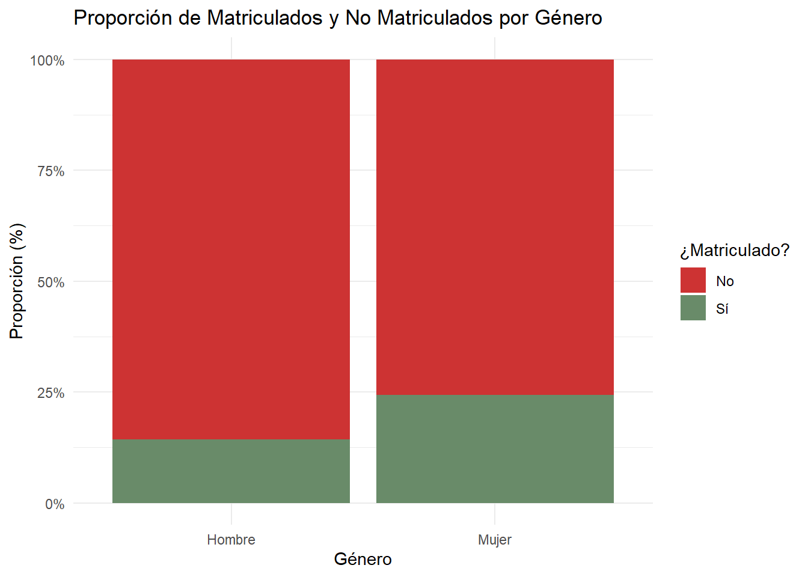
####quiero ver factor tiempo, saco tasa de matricula hombres y mujeres####annado promedio para que se note que los hombres tienen peor matriculatasas_por_sexo <- base_matriculado_corta %>%group_by(anno, SEXO) %>%summarise(tasa =mean(matriculado) *100, .groups ="drop")tasas_promedio <- tasas_por_sexo %>%group_by(anno) %>%summarise(SEXO ="Promedio", tasa =mean(tasa), .groups ="drop")tasas_todas <-bind_rows(tasas_por_sexo, tasas_promedio) %>%mutate(SEXO =factor(SEXO, levels =c("Hombre", "Mujer", "Promedio")))ggplot(tasas_todas, aes(x = anno, y = tasa, color = SEXO, linetype = SEXO)) +geom_line(size =1) +geom_point() +geom_text(aes(label =round(tasa, 1)), vjust =-0.5, size =3.5) +scale_color_manual(values =c("Hombre"="#6E7B8B","Mujer"="#B0C4DE","Promedio"="#CDCDC1")) +scale_linetype_manual(values =c("Hombre"="solid","Mujer"="solid","Promedio"="dashed")) +scale_y_continuous(labels = scales::percent_format(scale =1)) +labs(title ="Tasa de matrícula por cohorte y sexo",x ="Cohorte",y ="Tasa de matrícula (%)",color ="Sexo",linetype ="Sexo") +theme_minimal(base_size =13)
Warning: Using `size` aesthetic for lines was deprecated in ggplot2 3.4.0.
ℹ Please use `linewidth` instead.
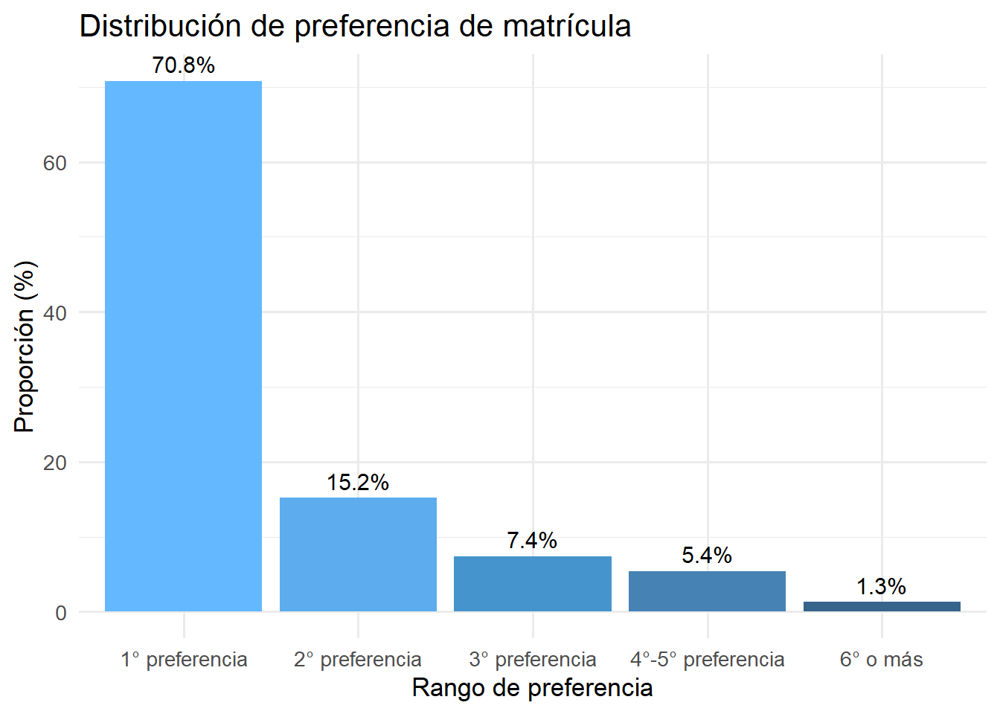
El gráfico muestra que la tasa de matrícula ha sido consistentemente mayor en mujeres que en hombres a lo largo de todas las cohortes. Mientras la tasa femenina se mantiene entre el 20% y el 30%, en los hombres fluctúa en torno al 10–20%, con brechas visibles en cada año. Esta diferencia revela una participación comparativamente más baja de varones en carreras de pedagogía feminizadas, reforzando el patrón de feminización histórica en este campo. Aunque se observan algunas alzas en años recientes, la brecha relativa entre géneros persiste.
# A tibble: 2 × 3
SEXO promedio_rendiciones desviacion_rendiciones
<chr> <dbl> <dbl>
1 Hombre 1.90 1.03
2 Mujer 1.74 0.873
La diferencia en la cantidad de rendiciones entre hombres y mujeres, aunque estadísticamente acotada, revela matices importantes en la configuración de las trayectorias previas a la matrícula. Con una media de 1,89 rendiciones en hombres frente a 1,74 en mujeres, y una desviación estándar de 1,03 versus 0,87, se observa una dispersión más amplia entre los varones. Esta heterogeneidad no solo antecede el acto de matrícula, sino que puede influir directamente en la posición relativa que ocupan las carreras de pedagogía dentro de sus preferencias.
####quiero ver ahora las preferencias de aquellos que ingresan####uso otra base para estobase_panel_enriquecida_final_r <- base_panel_enriquecida_final_r %>%mutate(PREFERENCIA_RANGO =case_when(is.na(PREFERENCIA) ~NA_character_, PREFERENCIA ==1~"1° preferencia", PREFERENCIA ==2~"2° preferencia", PREFERENCIA ==3~"3° preferencia", PREFERENCIA %in%4:5~"4°-5° preferencia", PREFERENCIA >6~"6° o más",TRUE~NA_character_)) %>%filter(!is.na(PREFERENCIA_RANGO))matriculados <- base_panel_enriquecida_final_r %>%filter(matriculado ==TRUE)tabla_preferencias <- matriculados %>%count(PREFERENCIA_RANGO) %>%mutate(prop =round(n /sum(n) *100, 1))tabla_preferencias_sin_na <- tabla_preferencias %>%filter(!is.na(PREFERENCIA_RANGO))ggplot(tabla_preferencias, aes(x = PREFERENCIA_RANGO, y = prop, fill = PREFERENCIA_RANGO)) +geom_col() +geom_text(aes(label =paste0(prop, "%")), vjust =-0.5, size =4) +scale_fill_manual(values = colores_preferencias) +labs(title ="Distribución de preferencia de matrícula",x ="Rango de preferencia",y ="Proporción (%)",fill ="Preferencia" ) +theme_minimal(base_size =13) +theme(legend.position ="none")
En relación con la preferencia de matrícula, los resultados muestran una fuerte concentración en la primera opción declarada por los postulantes, donde se ubica el 71% de las matrículas efectivas. Las siguientes preferencias presentan una caída marcada: la segunda opción concentra el 15,4%, la tercera el 7,4%, y a partir de la cuarta opción la proporción desciende por debajo del 6%. Esto indica que la gran mayoría de quienes se matriculan lo hacen en la carrera priorizada en primer lugar.
####aca apilado y separado por generotabla_prop <- base_panel_enriquecida_final_r %>%group_by(SEXO, PREFERENCIA_RANGO) %>%summarise(n =n(), .groups ="drop") %>%group_by(SEXO) %>%mutate(prop = n /sum(n) *100) %>%# Aquí agregamos las etiquetasmutate(SEXO =factor(SEXO,levels =c(1, 2),labels =c("Hombres", "Mujeres")))##### Gráfico proporcional apilado (barra 100%)ggplot(tabla_prop, aes(x = SEXO, y = prop, fill = PREFERENCIA_RANGO)) +geom_col(position ="stack") +geom_text(aes(label =paste0(round(prop, 1), "%")),position =position_stack(vjust =0.5),size =3.5) +scale_fill_brewer(palette ="Blues") +labs(title ="Distribución proporcional de preferencia por género",x ="Género",y ="Proporción (%)",fill ="Rango de preferencia" ) +theme_minimal(base_size =13)
Al desagregar por género, se observa que tanto hombres como mujeres privilegian mayoritariamente su primera opción (65,2% y 71,3%, respectivamente). Sin embargo, los hombres tienden a matricularse en mayor proporción en segundas y terceras preferencias (16,9% y 9,7%) que las mujeres (15,2% y 7,1%). Esto sugiere que, si bien en ambos grupos la primera preferencia domina ampliamente, los hombres muestran una mayor dispersión en las opciones de matrícula en comparación con las mujeres, quienes concentran aún más sus decisiones en la primera alternativa.
###rendciones/inscripciones#### Filtrar personas matriculadas en carreras de pedagogíarendiciones <- base_matriculado_corta %>%count(rendiciones) %>%mutate(prop =round(n /sum(n) *100, 1))base_matriculado_corta %>%count(rendiciones, SEXO) %>%mutate(prop =round(n /sum(n) *100, 1))
####Rama tecnico vs humanista/cientificotabla_rama_sexo <- base_matriculado_corta %>%filter(!is.na(rama), !is.na(SEXO)) %>%group_by(SEXO, rama) %>%summarise(n =n(), .groups ="drop") %>%group_by(SEXO) %>%mutate(prop = n /sum(n) *100)ggplot(tabla_rama_sexo, aes(x = SEXO, y = prop, fill = rama)) +geom_col(position ="stack") +geom_text(aes(label =paste0(round(prop, 1), "%")),position =position_stack(vjust =0.5),size =4) +scale_fill_manual(values =c("H"="#B0C4DE", "T"="#6E7B8B")) +labs(title ="Distribución proporcional de ramas por género",x ="Género",y ="Proporción (%)",fill ="Rama" ) +theme_minimal(base_size =13)
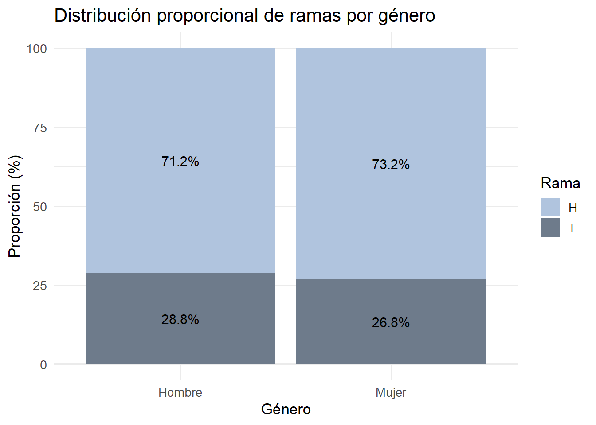
####lo mismo pero para ver si hay diferencia entre no matriculado y matriculadotabla_rama_sexo_mat <- base_matriculado_corta %>%filter(!is.na(rama), !is.na(SEXO), !is.na(matriculado)) %>%group_by(SEXO, matriculado, rama) %>%summarise(n =n(), .groups ="drop") %>%group_by(SEXO, matriculado) %>%mutate(prop = n /sum(n) *100)ggplot(tabla_rama_sexo_mat, aes(x = SEXO, y = prop, fill = rama)) +geom_col(position ="stack") +geom_text(aes(label =paste0(round(prop, 1), "%")),position =position_stack(vjust =0.5),size =3.5) +facet_wrap(~ matriculado, labeller =labeller(matriculado =c("TRUE"="Matriculado", "FALSE"="No matriculado"))) +scale_fill_manual(values =c("H"="#B0C4DE", "T"="#6E7B8B")) +labs(title ="Distribución proporcional de ramas por género y matrícula",x ="Género",y ="Proporción (%)",fill ="Rama" ) +theme_minimal(base_size =13)
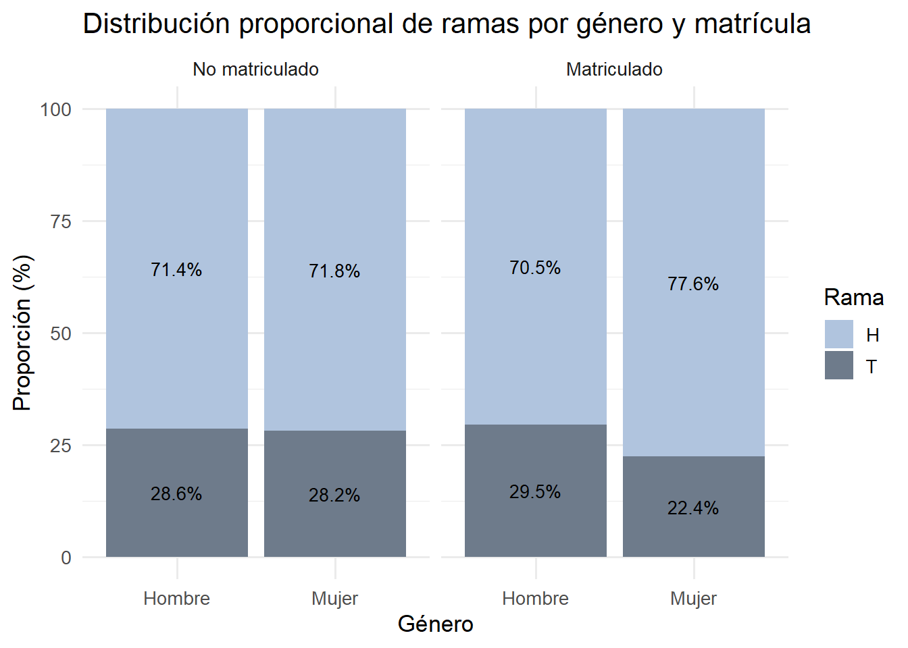
La distribución proporcional de ramas de enseñanza media, desagregada por género y condición de matrícula, muestra una alta consistencia entre grupos. En todos los casos, la rama humanista-científica (H) concentra la gran mayoría de los postulantes, mientras que la rama técnico-profesional (T) representa una proporción menor, cercana al 25–30%.
Entre los no matriculados, tanto hombres como mujeres provienen mayoritariamente de la rama humanista. Una tendencia similar se observa en los matriculados, aunque con una ligera diferencia por género: en los hombres la proporción de técnico-profesional se mantiene en torno al 29,5%, mientras que en las mujeres desciende a 22,4%.
Este patrón sugiere que, aunque la rama humanista-científica domina en ambos géneros, la matrícula masculina mantiene una presencia algo mayor de estudiantes provenientes de la educación técnico-profesional en comparación con las mujeres, quienes se concentran en mayor medida en la formación humanista-científica.
####Ver dependencias de donde vienen pero por municipal, particular pagado, particular subvencionadotabla_dependencia <- base_matriculado_corta %>%filter(!is.na(matriculado), !is.na(SEXO)) %>%group_by(SEXO, matriculado, dependencia_label) %>%summarise(n =n(), .groups ="drop") %>%group_by(SEXO, matriculado) %>%mutate(prop = n /sum(n) *100)ggplot(tabla_dependencia, aes(x = SEXO, y = prop, fill = dependencia_label)) +geom_col(position ="stack") +geom_text(aes(label =paste0(round(prop, 1), "%")),position =position_stack(vjust =0.5),size =3.5) +facet_wrap(~ matriculado, labeller =labeller(matriculado =c("TRUE"="Matriculado", "FALSE"="No matriculado"))) +scale_fill_manual(values =c("Municipal"="#6E7B8B","Particular subvencionado"="#B0C4DE","Particular pagado"="#EEE8AA" )) +labs(title ="Distribución Tipo de dependencia, género y matrícula",x ="Género",y ="Proporción (%)",fill ="Dependencia" ) +theme_minimal(base_size =13)
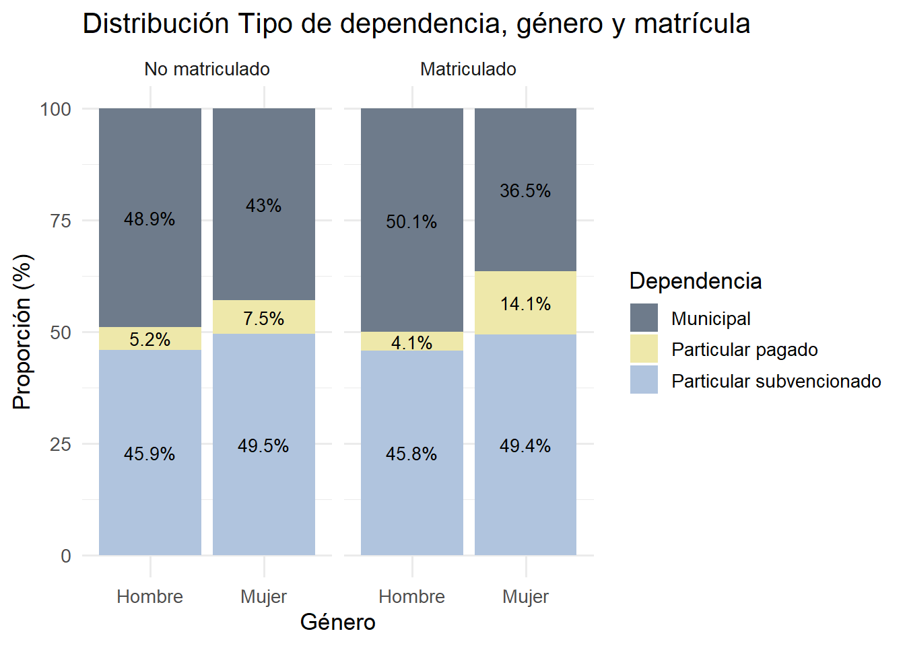
La distribución por dependencia escolar revela patrones diferenciados según género. Entre los matriculados, los hombres provienen mayoritariamente de establecimientos municipales (50,1%), mientras que en las mujeres destaca una mayor proporción de egresadas de colegios particulares pagados (14,1%). En ambos casos, el sector particular subvencionado concentra alrededor de la mitad de los ingresos efectivos (45–49%).
# A tibble: 1 × 3
ID_aux anno n
<chr> <dbl> <int>
1 id_0312903871264 2013 4
#### Ver variables de interesvariables_interes <- base_matriculado_corta %>%select(SEXO, rendiciones, REGIMEN, GRUPO_DEPENDENCIA, RAMA, anno, matriculado, PTJE_NEM)summary(variables_interes)
SEXO rendiciones REGIMEN GRUPO_DEPENDENCIA
Length:125546 Min. : 1.000 Min. :0.000 Min. :1.000
Class :character 1st Qu.: 1.000 1st Qu.:3.000 1st Qu.:2.000
Mode :character Median : 2.000 Median :3.000 Median :2.000
Mean : 1.767 Mean :2.814 Mean :2.348
3rd Qu.: 2.000 3rd Qu.:3.000 3rd Qu.:3.000
Max. :16.000 Max. :3.000 Max. :4.000
NA's :2640
RAMA anno matriculado PTJE_NEM
Length:125546 Min. :2007 Mode :logical Min. : 0.0
Class :character 1st Qu.:2009 FALSE:96974 1st Qu.:496.0
Mode :character Median :2013 TRUE :28572 Median :558.0
Mean :2014 Mean :558.3
3rd Qu.:2018 3rd Qu.:620.0
Max. :2022 Max. :844.0
NA's :7
Profiled confidence intervals may take longer time to compute.
Use `ci_method="wald"` for faster computation of CIs.
Profiled confidence intervals may take longer time to compute.
Use `ci_method="wald"` for faster computation of CIs.
Profiled confidence intervals may take longer time to compute.
Use `ci_method="wald"` for faster computation of CIs.
Profiled confidence intervals may take longer time to compute.
Use `ci_method="wald"` for faster computation of CIs.
Modelos Logísticos paso a paso (Odds Ratios)
Genero
Variables personales
Variables academicas
Modelo total
Predictors
Odds Ratios
CI
p
Odds Ratios
CI
p
Odds Ratios
CI
p
Odds Ratios
CI
p
(Intercept)
0.17
0.16 – 0.17
<0.001
0.12
0.11 – 0.13
<0.001
0.03
0.03 – 0.04
<0.001
0.01
0.01 – 0.01
<0.001
SEXO [Mujer]
1.93
1.85 – 2.01
<0.001
1.95
1.87 – 2.03
<0.001
1.72
1.64 – 1.79
<0.001
edad
1.02
1.01 – 1.02
<0.001
1.03
1.03 – 1.04
<0.001
rendiciones
0.94
0.93 – 0.96
<0.001
0.93
0.92 – 0.95
<0.001
PTJE NEM
1.00
1.00 – 1.00
<0.001
1.00
1.00 – 1.00
<0.001
rama [T]
0.82
0.79 – 0.84
<0.001
0.81
0.78 – 0.84
<0.001
dependencia label
[Particular pagado]
1.87
1.78 – 1.96
<0.001
1.83
1.75 – 1.92
<0.001
dependencia label
[Particular
subvencionado]
1.22
1.18 – 1.25
<0.001
1.21
1.18 – 1.25
<0.001
Observations
125546
125546
125536
125536
R2 Tjur
0.008
0.008
0.030
0.037
AIC
133604.839
133558.279
130918.630
130060.707
##base de datos abierta 1/2base_unica <-read_delim("https://raw.githubusercontent.com/sophkar/tesis/main/base_unica.csv",delim =",")
Rows: 94399 Columns: 9
── Column specification ────────────────────────────────────────────────────────
Delimiter: ","
chr (4): categoria_peda, tipo_inst_recod, egreso, sexo
dbl (5): cat_periodo, mrun, gen_alu, cod_inst, egresa
ℹ Use `spec()` to retrieve the full column specification for this data.
ℹ Specify the column types or set `show_col_types = FALSE` to quiet this message.
Rows: 334875 Columns: 8
── Column specification ────────────────────────────────────────────────────────
Delimiter: ","
chr (2): tipo_inst_3, tipo_inst_recod
dbl (6): cat_periodo, mrun, gen_alu, dur_estudio_carr, categoria_peda, egresa
ℹ Use `spec()` to retrieve the full column specification for this data.
ℹ Specify the column types or set `show_col_types = FALSE` to quiet this message.
Rows: 334875 Columns: 9
── Column specification ────────────────────────────────────────────────────────
Delimiter: ","
chr (4): categoria_peda, tipo_inst_recod, egreso, sexo
dbl (5): cat_periodo, mrun, gen_alu, cod_inst, egresa
ℹ Use `spec()` to retrieve the full column specification for this data.
ℹ Specify the column types or set `show_col_types = FALSE` to quiet this message.
Rows: 333510 Columns: 5
── Column specification ────────────────────────────────────────────────────────
Delimiter: ","
dbl (5): mrun, cat_periodo, categoria_peda, egresa, gen_alu
ℹ Use `spec()` to retrieve the full column specification for this data.
ℹ Specify the column types or set `show_col_types = FALSE` to quiet this message.
###codigos#### Paleta personalizadacolores_egreso <-c("Sí"="#698B69", "No"="#CD3333")####ver duracion de los estudiosduracion_promedio_categoria <- base_propu_trayec_r %>%group_by(categoria_peda) %>%summarise(promedio_duracion =mean(dur_estudio_carr, na.rm =TRUE))####ver base glimpse(base_propu_trayec_r)
####calcular duración individual (por cantidad de años con presencia en la carrera)duracion_individual <- base_propu_trayec_r %>%filter(!is.na(cat_periodo)) %>%# asegurarse que anno existagroup_by(mrun) %>%summarise(duracion_carrera =n_distinct(cat_periodo),sexo =first(gen_alu), egresado =first(egresa),categoria_peda =first(categoria_peda))duracion_genero_categoria <- duracion_individual %>%group_by(sexo, categoria_peda) %>%summarise(promedio_anios =mean(duracion_carrera, na.rm =TRUE),mediana_anios =median(duracion_carrera, na.rm =TRUE),n =n())
`summarise()` has grouped output by 'sexo'. You can override using the
`.groups` argument.
####Proporcion de egreso por carrera y generoproporciones_egreso <- base_propu_trayec_r %>%mutate(sexo =case_when( gen_alu ==1~"Hombre", gen_alu ==2~"Mujer" ),egresa =ifelse(egresa ==1, "Sí", "No"),categoria_peda =factor(categoria_peda, levels =c(1, 2, 3),labels =c("Parvularia", "Básica", "Mixta")) ) %>%group_by(sexo, categoria_peda, egresa) %>%summarise(n =n(), .groups ="drop") %>%group_by(sexo, categoria_peda) %>%mutate(proporcion = n /sum(n) *100)proporciones_egreso <- base_propu_trayec_r %>%mutate(sexo =case_when( gen_alu ==1~"Hombre", gen_alu ==2~"Mujer" ),egresa =ifelse(egresa ==1, "Sí", "No") ) %>%group_by(sexo, egresa, categoria_peda) %>%summarise(n =n(), .groups ="drop") %>%group_by(sexo) %>%mutate(proporcion = n /sum(n) *100)ggplot(proporciones_egreso, aes(x = categoria_peda, y = proporcion, fill = egresa)) +geom_col(position ="stack") +facet_wrap(~ sexo) +labs(title ="Proporción de egreso por carrera y género",x ="Categoría Pedagógica",y ="Proporción (%)",fill ="¿Egresó?" ) +scale_fill_manual(values = colores_egreso) +scale_y_continuous(labels = scales::percent_format(scale =1)) +theme_minimal(base_size =13)
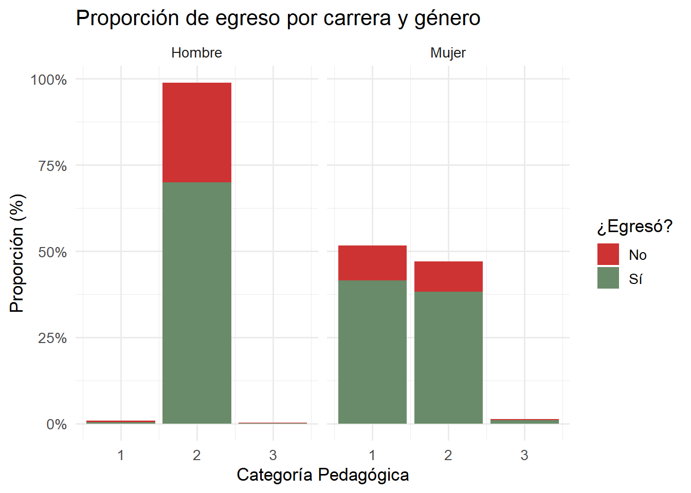
####evolucion por annotasas_por_egreso <- base_trayectorias_SC_ultimo_dato %>%mutate(SEXO =case_when( gen_alu ==1~"Hombre", gen_alu ==2~"Mujer" ) ) %>%group_by(cat_periodo, SEXO) %>%summarise(tasa =mean(egresa, na.rm =TRUE) *100, .groups ="drop")##### Promedio general por añotasas_promedio <- tasas_por_egreso %>%group_by(cat_periodo) %>%summarise(SEXO ="Promedio", tasa =mean(tasa), .groups ="drop")##### Unirtasas_todas <-bind_rows(tasas_por_egreso, tasas_promedio) %>%mutate(SEXO =factor(SEXO, levels =c("Hombre", "Mujer", "Promedio")))tasas_todas_filtradas <- tasas_todas %>%filter(cat_periodo <=2022)##### Gráfico este lo reporto?ggplot(tasas_todas_filtradas, aes(x = cat_periodo, y = tasa, color = SEXO, linetype = SEXO)) +geom_line(size =1) +geom_point() +geom_text(aes(label =round(tasa, 1)), vjust =-0.5, size =3.5) +scale_color_manual(values =c("Hombre"="#6E7B8B","Mujer"="#B0C4DE","Promedio"="#CDCDC1" ) ) +scale_linetype_manual(values =c("Hombre"="solid","Mujer"="solid","Promedio"="dashed" ) ) +scale_y_continuous(labels = scales::percent_format(scale =1)) +labs(title ="Tasa de egreso observada por año y sexo",x ="Año observado (último año por persona)",y ="Tasa de egreso (%)",color ="Sexo",linetype ="Sexo" ) +theme_minimal(base_size =13)
####proporciones institucionesbase_propu_trayec_r <- base_propu_trayec_r %>%filter(tipo_inst_3 !="Universidades (* Carrera en Convenio)") %>%mutate(tipo_inst_recod =case_when( tipo_inst_3 %in%c("Universidades Privadas", "Universidades Privadas CRUCH") ~"Universidad privada", tipo_inst_3 =="Universidades Estatales CRUCH"~"Universidad estatal", tipo_inst_3 =="Institutos Profesionales"~"Instituto profesional",TRUE~NA_character_ ),tipo_inst_recod =factor(tipo_inst_recod, levels =c("Universidad estatal", "Universidad privada", "Instituto profesional")) )proporciones_inst <- base_propu_trayec_r %>%filter(!is.na(tipo_inst_recod)) %>%group_by(cat_periodo, tipo_inst_recod) %>%summarise(n =n(), .groups ="drop") %>%group_by(cat_periodo) %>%mutate(proporcion = n /sum(n))ggplot(proporciones_inst, aes(x = cat_periodo, y = proporcion, fill = tipo_inst_recod)) +geom_area(color ="white") +scale_y_continuous(labels =percent_format()) +scale_fill_manual(values =c("Universidad estatal"="#6E7B8B","Universidad privada"="#B0C4DE","Instituto profesional"="#CDCDC1" ) ) +labs(title ="Evolución proporcional de matrícula por tipo de institución",x ="Año",y ="Proporción del total",fill ="Tipo de institución" ) +theme_minimal(base_size =13)
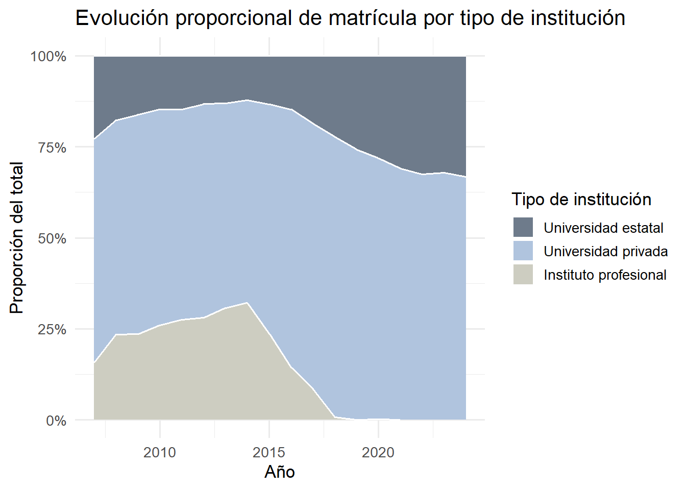
proporciones_inst_genero <- base_propu_trayec_r %>%filter(!is.na(tipo_inst_recod), gen_alu %in%c(1, 2)) %>%mutate(sexo =case_when( gen_alu ==1~"Hombre", gen_alu ==2~"Mujer" ) ) %>%group_by(cat_periodo, tipo_inst_recod, sexo) %>%summarise(n =n(), .groups ="drop") %>%group_by(cat_periodo, sexo) %>%mutate(proporcion = n /sum(n))#####grafico comparativo entre hombres y mujeres segun institucionggplot(proporciones_inst_genero, aes(x = cat_periodo, y = proporcion, fill = tipo_inst_recod)) +geom_area(color ="white") +scale_y_continuous(labels = scales::percent_format()) +scale_fill_manual(values =c("Universidad estatal"="#6E7B8B","Universidad privada"="#B0C4DE","Instituto profesional"="#CDCDC1" ) ) +labs(title ="Evolución de matrícula por institución y género",x ="Año",y ="Proporción del total",fill ="Tipo de institución" ) +facet_wrap(~ sexo) +theme_minimal(base_size =13)
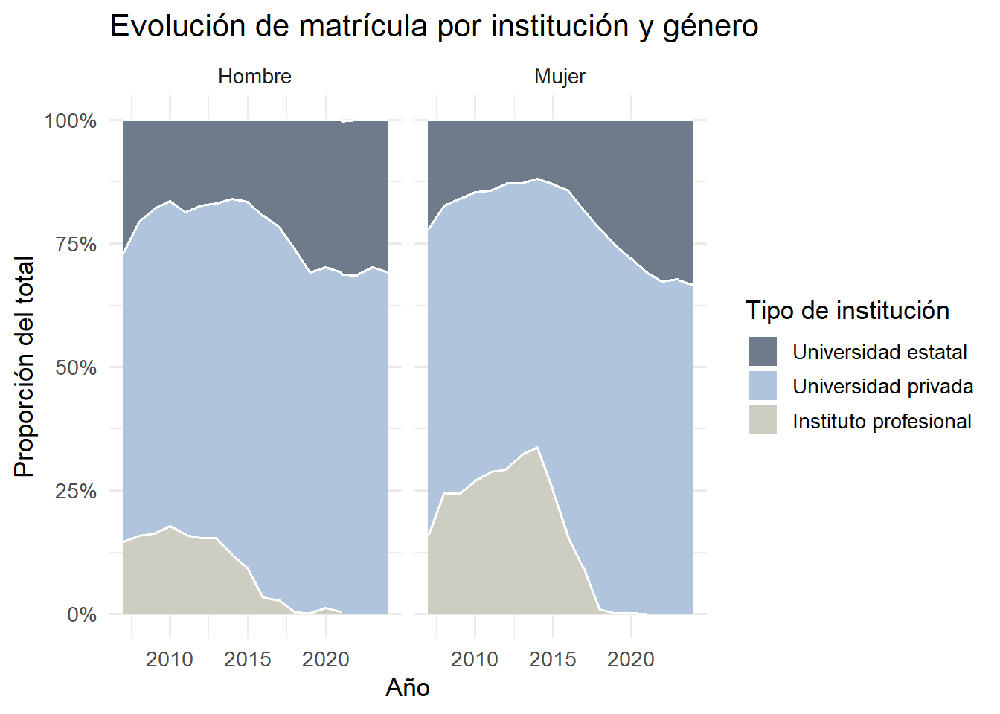
La evolución de la matrícula por tipo de institución muestra un cambio marcado en la composición del sistema formador entre 2007 y 2023. En ambos géneros se observa una reducción progresiva de la participación de los institutos profesionales, que hacia 2020 prácticamente desaparecen como vía de ingreso a pedagogía. Paralelamente, las universidades privadas ganan un peso creciente, especialmente entre los hombres, donde hacia el final del período concentran más de la mitad de la matrícula.
En el caso de las mujeres, si bien también aumenta la participación de las universidades privadas, las universidades estatales mantienen un peso relativamente mayor que en los hombres, representando una proporción más estable a lo largo del tiempo.
####preparacion y modelos# Conteo de NA por variablena_count <-sapply(base_para_modelo, function(x) sum(is.na(x)))na_prop <-sapply(base_para_modelo, function(x) mean(is.na(x)))na_table <-data.frame(variable =names(na_count),n_NA = na_count,prop_NA =round(na_prop *100, 2))View(na_table) # tabla ordenadabase_para_modelo <- base_para_modelo %>%mutate(egreso =factor(egresa, levels =c(0,1), labels =c("No","Sí")),sexo =factor(gen_alu, levels =c(1,2), labels =c("Hombre","Mujer")))num_vars <- base_para_modelo %>%select(where(is.numeric))correlaciones<-correlate(num_vars)
# A tibble: 5 × 6
term cat_periodo mrun gen_alu cod_inst egresa
<chr> <dbl> <dbl> <dbl> <dbl> <dbl>
1 cat_periodo NA 0.00149 0.0342 0.0384 -0.126
2 mrun 0.00149 NA -0.00536 -0.00323 0.00154
3 gen_alu 0.0342 -0.00536 NA 0.0132 0.0719
4 cod_inst 0.0384 -0.00323 0.0132 NA -0.0623
5 egresa -0.126 0.00154 0.0719 -0.0623 NA
base_unica <- base_para_modelo %>%arrange(mrun, cod_inst, cat_periodo) %>%# ordenar por persona, carrera e iniciogroup_by(mrun) %>%# agrupar por persona y carreraslice_head(n =1) %>%ungroup()##### Revisar resultadonrow(base_unica)
[1] 94399
n_distinct(base_unica$mrun)
[1] 94399
proporciones_egreso <- base_unica %>%mutate(sexo =case_when( gen_alu ==1~"Hombre", gen_alu ==2~"Mujer" ),egresa =ifelse(egresa ==1, "Sí", "No")) %>%group_by(sexo, categoria_peda, egresa) %>%summarise(n =n(), .groups ="drop") %>%group_by(sexo, categoria_peda) %>%mutate(proporcion = n /sum(n) *100)ggplot(proporciones_egreso, aes(x = categoria_peda, y = proporcion, fill = egresa)) +geom_col(position ="stack") +facet_wrap(~ sexo) +labs(title ="Proporción de egreso por carrera y género",x ="Categoría Pedagógica",y ="Proporción (%)",fill ="¿Egresó?" ) +scale_fill_manual(values = colores_egreso) +scale_y_continuous(labels = scales::percent_format(scale =1)) +theme_minimal(base_size =13)
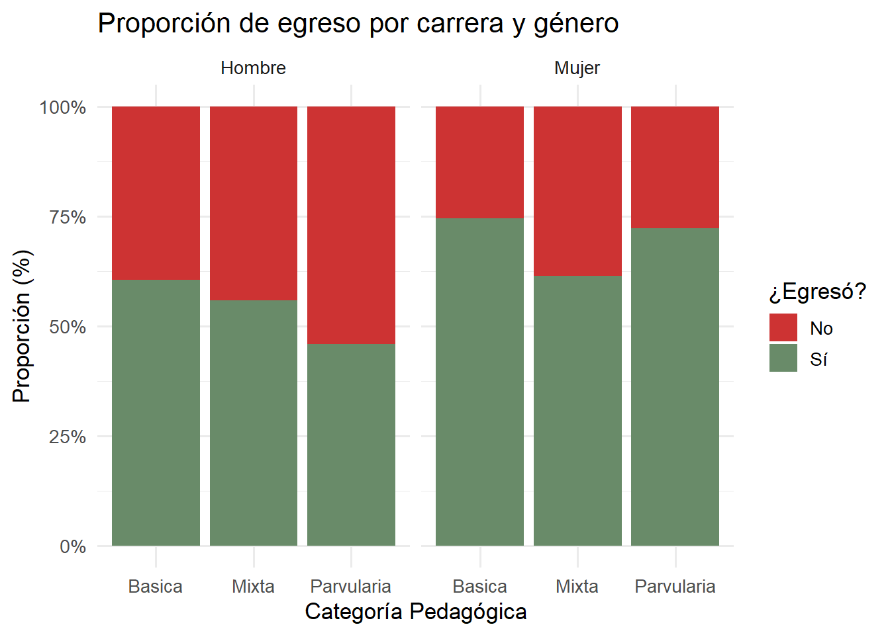
##### Revisar resultadonrow(base_unica)
[1] 94399
n_distinct(base_unica$mrun)
[1] 94399
modelo_reg_1 <-glm(egresa ~ sexo, data = base_unica, family = binomial)modelo_reg_2 <-glm(egresa ~ categoria_peda + tipo_inst_recod, data = base_unica, family = binomial)modelo_reg_3 <-glm(egresa ~ sexo + tipo_inst_recod + categoria_peda, data = base_unica, family = binomial)tab_model( modelo_reg_1, modelo_reg_2, modelo_reg_3,transform ="exp", # OR en vez de log-oddsshow.icc =TRUE,show.aic =TRUE,show.obs =TRUE,dv.labels =c("Género", "Educativas", "Modelo completo"),title ="Modelos de regresión logística sobre probabilidad de egreso")
Profiled confidence intervals may take longer time to compute.
Use `ci_method="wald"` for faster computation of CIs.
Profiled confidence intervals may take longer time to compute.
Use `ci_method="wald"` for faster computation of CIs.
Profiled confidence intervals may take longer time to compute.
Use `ci_method="wald"` for faster computation of CIs.
Modelos de regresión logística sobre probabilidad de egreso
##base de datos abierta 2/2docente_fil_r <-read_delim("https://raw.githubusercontent.com/sophkar/tesis/main/docente_fil_r.csv",delim =",")
Rows: 253682 Columns: 15
── Column specification ────────────────────────────────────────────────────────
Delimiter: ","
chr (4): genero_lbl, directivo_lbl, horas_grupo_, tipo_inst_recod
dbl (11): AGNO, RBD, COD_DEPE, RURAL_RBD, mrun, DOC_GENERO, DOC_FEC_NAC, ID_...
ℹ Use `spec()` to retrieve the full column specification for this data.
ℹ Specify the column types or set `show_col_types = FALSE` to quiet this message.
docente_fil_r <- docente_fil_r %>%arrange(mrun, RBD, AGNO) %>%group_by(mrun, RBD) %>%mutate(# contador acumulado de años "docente_aula==1" hasta el año anteriordocente_acum_prev =lag(cumsum(docente_aula ==1), default =0L),# tiempo hasta el ascenso: SOLO se informa en el año donde ascenso==1tiempo_ascenso_doc =ifelse(ascenso ==1, docente_acum_prev, NA_integer_) ) %>%ungroup()ascenso_tiempos <- docente_fil_r %>%filter(ascenso ==1, !is.na(tiempo_ascenso_doc)) %>%group_by(DOC_GENERO) %>%summarise(n =n(),promedio_anios =mean(tiempo_ascenso_doc, na.rm =TRUE),mediana_anios =median(tiempo_ascenso_doc, na.rm =TRUE),minimo_anios =min(tiempo_ascenso_doc, na.rm =TRUE),maximo_anios =max(tiempo_ascenso_doc, na.rm =TRUE))ascenso_tiempos
ggplot(tabla_rural_genero,aes(x = genero_lbl, y = prop_dentro_genero, fill = rural_lbl)) +geom_col(position ="fill") +geom_text(aes(label =percent(prop_dentro_genero, accuracy =0.1)),position =position_stack(vjust =0.5),size =3, color ="black") +scale_y_continuous(labels =percent_format(scale =100)) +scale_fill_manual(values = colores_rur) +labs(title ="Proporción de ruralidad dentro de cada género",x ="Género",y ="Proporción (%)",fill ="Tipo de establecimiento" ) +theme_minimal(base_size =13)
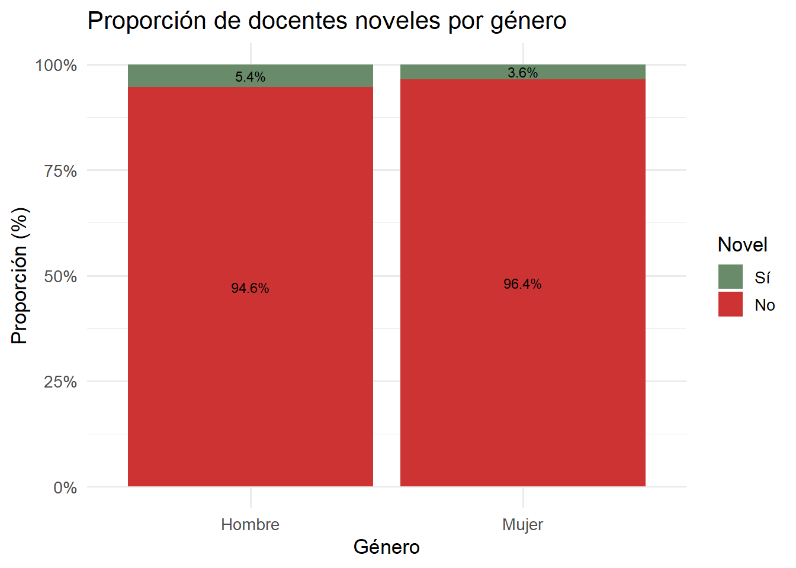
La distribución por ruralidad muestra que la mayoría de los docentes, tanto hombres como mujeres, se desempeña en establecimientos urbanos. No obstante, se evidencian diferencias de género: mientras el 20,7% de los hombres trabaja en contextos rurales, entre las mujeres esta proporción desciende al 13,3%. De este modo, los hombres presentan una presencia relativamente mayor en zonas rurales.
La distribución de docentes según dependencia del establecimiento evidencia diferencias por género. Entre los hombres, la mayor proporción se encuentra en el sector municipal (49,5%), seguido por el particular subvencionado (46,7%) y en menor medida el particular pagado (3,8%). En el caso de las mujeres, predomina el particular subvencionado (52,1%), seguido del sector municipal (36,6%) y una proporción mayor que los hombres en el particular pagado (11,3%).
###7.ver abandono - noveles - rotaciondocente_fil_r <- docente_fil_r %>%mutate(anio_nac =as.integer(substr(DOC_FEC_NAC, 1, 4)),edad = AGNO - anio_nac)docente_fil_r <- docente_fil_r %>%arrange(mrun, AGNO) %>%group_by(mrun) %>%mutate(# diferencia con el año anteriorgap = AGNO -lag(AGNO),# edad en el año previo (para evaluar la condición de jubilación)edad_prev =lag(edad),genero_prev =lag(DOC_GENERO),# abandono si hay 5+ años de ausencia entre aparicionesabandono_interno =case_when( genero_prev ==2& edad_prev <60& gap >=5~1, # mujer genero_prev ==1& edad_prev <65& gap >=5~1, # hombreTRUE~0 ) ) %>%ungroup()abandono_final <- docente_fil_r %>%group_by(mrun) %>%summarise(ultimo_agno =max(AGNO, na.rm =TRUE),genero =last(DOC_GENERO),edad_ultimo =last(edad) ) %>%mutate(abandono_tope =case_when( genero ==2& edad_ultimo <60& (2024- ultimo_agno) >=5~1, genero ==1& edad_ultimo <65& (2024- ultimo_agno) >=5~1,TRUE~0))docente_fil_r<- docente_fil_r %>%arrange(mrun, AGNO) %>%group_by(mrun) %>%mutate(anio_nac =as.integer(substr(DOC_FEC_NAC, 1, 4)),edad = AGNO - anio_nac,# --- Abandono por brecha interna (cuando reaparece tras ≥5 años) ---gap = AGNO -lag(AGNO),edad_prev =lag(edad),gen_prev =lag(DOC_GENERO),abandono_interno =as.integer( (!is.na(gap) & gap >=5) & ( (gen_prev ==2&!is.na(edad_prev) & edad_prev <60) |# mujer (gen_prev ==1&!is.na(edad_prev) & edad_prev <65) # hombre ) ),# --- Extensión al tope 2024 (si NO vuelve) ---ultimo_agno =max(AGNO, na.rm =TRUE),# tomar género y edad del último año observado (sin joins)edad_ultimo = { idx <-match(ultimo_agno, AGNO); edad[idx[1]] },genero_ultimo = { idx <-match(ultimo_agno, AGNO); DOC_GENERO[idx[1]] },abandono_tope =as.integer( (2024- ultimo_agno) >=5& ( (genero_ultimo ==2&!is.na(edad_ultimo) & edad_ultimo <60) |# mujer (genero_ultimo ==1&!is.na(edad_ultimo) & edad_ultimo <65) # hombre ) ),# >>> Re-codificación final de *la misma* variableabandono_interno =pmax(abandono_interno, abandono_tope) ) %>%ungroup()tabla_abandono_genero <- docente_fil_r%>%filter(!is.na(DOC_GENERO), !is.na(abandono_interno)) %>%group_by(DOC_GENERO, abandono_interno) %>%summarise(n =n(), .groups ="drop_last") %>%mutate(prop = n /sum(n)) %>%ungroup()ggplot( tabla_abandono_genero,aes(x =factor(DOC_GENERO, levels =c(1, 2), labels =c("Hombre", "Mujer")),y = prop,fill =factor(abandono_interno, levels =c(0, 1), labels =c("No", "Sí")) )) +geom_col(position ="fill") +geom_text(aes(label =percent(prop, accuracy =0.1)),position =position_stack(vjust =0.5),size =3, color ="black" ) +scale_y_continuous(labels =percent_format(scale =100)) +scale_fill_manual(values = colores_syn) +labs(title ="Abandono por género",x ="Género",y ="Proporción (%)",fill ="Abandono" ) +theme_minimal(base_size =13)
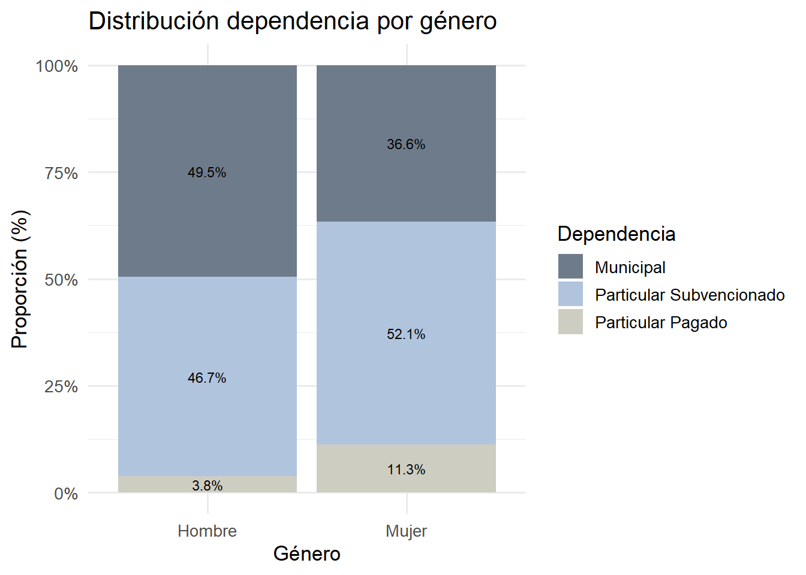
El abandono durante la trayectoria formativa presenta niveles muy bajos en ambos géneros. Entre los hombres, el 2,7% interrumpe sus estudios antes de egresar, mientras que en las mujeres esta proporción asciende al 3,4%. En consecuencia, más del 96% de los estudiantes, sin distinción de género, logra mantenerse en el sistema formativo hasta completar su proceso académico.
###8.novelestitulos_por_mrun <- base_propu_trayec_r %>%mutate(cat_periodo =as.integer(cat_periodo)) %>%# por si viene como caráctergroup_by(mrun) %>%summarise(anio_titulacion =max(cat_periodo, na.rm =TRUE),.groups ="drop")docente_fil_r<- docente_fil_r%>%left_join(titulos_por_mrun, by ="mrun")docente_fil_r<- docente_fil_r%>%group_by(mrun) %>%mutate(anio_ingreso_lab =suppressWarnings(min(AGNO, na.rm =TRUE))) %>%ungroup()docente_fil_r<- docente_fil_r%>%mutate(novel =as.integer(!is.na(anio_titulacion) & anio_ingreso_lab == anio_titulacion))tabla_noveles_genero <- docente_fil_r%>%filter(!is.na(DOC_GENERO), !is.na(novel)) %>%# noveles debe ser 0/1group_by(genero =factor(DOC_GENERO, levels =c(1, 2),labels =c("Hombre", "Mujer")), novel) %>%summarise(N =n(), .groups ="drop_last") %>%group_by(genero) %>%mutate(prop = N /sum(N),prop_pct =percent(prop, accuracy =0.1),novel_lbl =factor(novel, levels =c(1, 0),labels =c("Sí", "No"))) %>%ungroup()##### ver tablatabla_noveles_genero
# A tibble: 4 × 6
genero novel N prop prop_pct novel_lbl
<fct> <int> <int> <dbl> <chr> <fct>
1 Hombre 0 26501 0.946 94.6% No
2 Hombre 1 1519 0.0542 5.4% Sí
3 Mujer 0 217639 0.964 96.4% No
4 Mujer 1 8023 0.0356 3.6% Sí
ggplot(tabla_noveles_genero,aes(x = genero, y = prop, fill = novel_lbl)) +geom_col() +# usamos prop ya calculadageom_text(aes(label = prop_pct),position =position_stack(vjust =0.5),size =3, color ="black") +scale_y_continuous(labels =percent_format(scale =100)) +scale_fill_manual(values = colores_syn) +labs(title ="Proporción de docentes noveles por género",x ="Género",y ="Proporción (%)",fill ="Novel" ) +theme_minimal(base_size =13)
docente_fil_r<- docente_fil_r%>%group_by(mrun) %>%mutate(# RBD distintos en los que ha estado la persona (ignorando NA)rbd_unicos =n_distinct(RBD[!is.na(RBD)]),# Rotación simple: cuántos cambios como mínimo implica haber pasado por rbd_unicosrotacion_total =pmax(rbd_unicos -1L, 0L) ) %>%ungroup()tabla_resumen <- docente_fil_r%>%distinct(mrun, genero_lbl, rotacion_total) %>%# 1 fila por personagroup_by(genero_lbl) %>%summarise(media_rotacion =mean(rotacion_total, na.rm =TRUE),sd_rotacion =sd(rotacion_total, na.rm =TRUE),n_personas =n(),.groups ="drop")print(tabla_resumen)
base_personas <- docente_fil_r %>%distinct(mrun, DOC_GENERO, rotacion_total) %>%mutate(genero_lbl =factor(DOC_GENERO, levels =c(1, 2),labels =c("Hombre", "Mujer")))##### Proporciones DENTRO de cada género##### (para hombres: cada proporción se divide por el total de hombres; idem mujeres)tabla_rotacion_genero <- base_personas %>%group_by(genero_lbl, rotacion_total) %>%summarise(n =n(), .groups ="drop_last") %>%mutate(prop = n /sum(n)) %>%# <- clave: normaliza por géneroungroup()tabla_rotacion_genero %>%mutate(prop_pct =percent(prop, accuracy =0.1)) %>%arrange(genero_lbl, rotacion_total)
tabla_ejercicio_genero_cat <- docente_fil_r %>%filter(!is.na(DOC_GENERO),!is.na(categoria_peda),!is.na(ejercicio_area)) %>%mutate(genero_lbl =factor(DOC_GENERO, levels =c(1, 2),labels =c("Hombre", "Mujer")),ejercicio_lbl =factor(ifelse(ejercicio_area ==1, "Sí", "No"),levels =c("Sí", "No")),categoria_lbl =factor(categoria_peda,levels =c("Parvularia", "Basica", "Mixta")) ) %>%group_by(categoria_lbl, genero_lbl, ejercicio_lbl) %>%summarise(n =n(), .groups ="drop_last") %>%group_by(categoria_lbl, genero_lbl) %>%mutate(prop_dentro_genero = n /sum(n)) %>%ungroup()tabla_ejercicio_genero <- docente_fil_r %>%filter(!is.na(DOC_GENERO),!is.na(ejercicio_area)) %>%# Quitamos categoria_peda porque ya no la usamosmutate(genero_lbl =factor(DOC_GENERO, levels =c(1, 2),labels =c("Hombre", "Mujer")),ejercicio_lbl =factor(ifelse(ejercicio_area ==1, "Sí", "No"),levels =c("Sí", "No")) ) %>%group_by(genero_lbl, ejercicio_lbl) %>%summarise(n =n(), .groups ="drop_last") %>%group_by(genero_lbl) %>%mutate(prop_dentro_genero = n /sum(n)) %>%ungroup()#### separado por categoría pedagógicaggplot(tabla_ejercicio_genero_cat,aes(x = genero_lbl, y = prop_dentro_genero, fill = ejercicio_lbl)) +geom_col(position ="fill") +geom_text(aes(label =percent(prop_dentro_genero, accuracy =0.1)),position =position_stack(vjust =0.5),size =3, color ="black") +scale_y_continuous(labels =percent_format(accuracy =1)) +scale_fill_manual(values = colores_syn,name ="Ejercicio en el área titulada") +labs(title ="Proporción de ejercicio en el área titulada",x ="Género",y ="Proporción dentro del género" ) +facet_wrap(~ categoria_lbl, nrow =1) +theme_minimal(base_size =13) +theme(legend.position ="bottom")
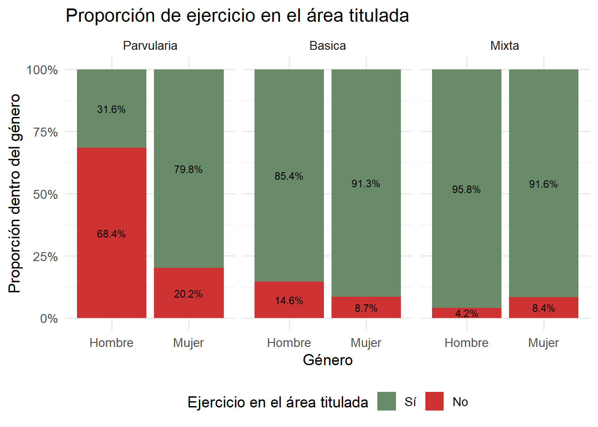
La proporción de ejercicio en el área titulada muestra diferencias relevantes por género y categoría pedagógica. En educación parvularia, solo el 31,6% de los hombres se desempeña en el área para la que se formó, frente al 79,8% de las mujeres, lo que evidencia una brecha marcada. En cambio, en educación básica y en programas mixtos las tasas de ejercicio son altas en ambos géneros, con valores que superan el 85% entre hombres y el 90% entre mujeres.
Estos resultados indican que la principal diferencia de género en el ejercicio profesional se concentra en el nivel parvulario, donde los hombres presentan una probabilidad considerablemente menor de insertarse laboralmente en el área en la que se titularon.
ped. en educación básica intercultural en contexto mapuche
3745
37045
Universidad Católica de Temuco
ped. en ed. básica c/ mención en ed. rural y desarrollo, lic. en educación
2606
26006
Universidad de Playa Ancha
ped.educacion general basica: m/lenguaje-matem.y -ciencias
3518
35018
Universidad Católica del Maule
ped.educacion general basica: m/lenguaje-matem. cs.nat. y cs.soc.
35061
Universidad Católica del Maule
pedagogía básica bilingüe inglés/español
43039
Universidad de Los Andes
pedagogia de educacion gral.basica
2329
23029
Universidad Arturo Prat
pedagogía educación general básica m/ castellano y cs. sociales o matemáti
1433
14033
Pontificia Universidad Católica de Valparaíso
pedagogia en educ básica especialidad lenguaje y com o educ matemática
2983
29083
Universidad del Bio-Bio
pedagogia en educ general basica
2551
25051
Universidad de la Serena
pedagogia en educ general basica
2982
29082
Universidad del Bio-Bio
pedagogia en educ gral basica
2553
25053
Universidad de la Serena
pedagogia en educ parvularia
2980
29080
Universidad del Bio-Bio
pedagogía en educación básica
44011
Universidad del Desarrollo
pedagogía en educación básica
50511
Universidad San Sebastián
pedagogía en educación básica
50811
Universidad San Sebastián
pedagogía en educación básica
56220
Universidad de Las Américas
pedagogía en educación básica:licenciado en educación
43019
43020
Universidad de los Andes
pedagogía en educación básica c/mención en ciencias de la naturaleza
3267
Universidad de los Lagos
pedagogía en educación básica c/mención en matemáticas
3266
Universidad de los Lagos
pedagogía en educación básica c/menciones, licenciatura en educación
17823
Universidad Austral de Chile
pedagogía en educación básica c/menciones, licenciatura en educación
17824
Universidad Austral de Chile
pedagogia en educacion basica con especialización
3722
37037
Universidad Católica de Temuco
pedagogia en educacion basica con especialización
18073
Universidad Católica del Norte
pedagogía en educación básica con mención en:
22037
Universidad de Tarapacá
pedagogía en educación básica con mención en:
22041
Universidad de Tarapacá
pedagogía en educación básica mención lenguaje y matemática
32055
Universidad de Los Lagos
pedagogía en educación básica diurna
46101
Universidad Católica Silva Henríquez
pedagogía en educación básica vespertina
46102
Universidad Católica Silva Henríquez
pedagogía en educación de párvulos
44012
Universidad del Desarrollo
pedagogia en educacion general basica
2451
24051
Universidad de Antofagasta
pedagogia en educacion general basica
3515
35015
Universidad Católica del Maule
pedagogia en educacion general basica
38167
Universidad Diego Portales
pedagogia en educacion general basica
39137
Universidad Mayor
pedagogia en educacion general basica
51181
Universidad Central
pedagogía en educación general básica
53204
Universidad Bernardo O’higgins
pedagogía en educación general básica
32059
Universidad de Los Lagos
pedagogía en educación general básica bilingüe (inglés-español)
39136
Universidad Mayor
pedagogia en educacion general basica con mención en alemán
34069
Universidad de Talca
pedagogía en educación general básica mención inglés
34029
Universidad de Talca
pedagogia en educacion gral. basica
3610
36010
Universidad Católica de la Santísima Concepción
pedagogía en educación básica
3333
33033
Universidad de Magallanes
pedagogía en educación básica
11523
Universidad de Chile
pedagogía en educación básica
47002
Universidad de O’higgins
pedagogía en educación básica
49111
Universidad Autónoma de Chile
pedagogía en educación básica
49214
Universidad Autónoma de Chile
pedagogía en educación básica
49317
Universidad Autónoma de Chile
pedagogía en educación básica
52110
Universidad Academia de Humanismo Cristiano
pedagogía en educación básica, licenciatura en educación
2605
26005
Universidad de Playa Ancha
pedagogía en educación básica, licenciatura en educación (vespertina)
26034
Universidad de Playa Ancha
pedagogía en educación parvularia
3332
33032
Universidad de Magallanes
pedagogía en educación parvularia
38168
Universidad Diego Portales
pedagogía en educación parvularia
12097
Pontificia Universidad Católica de Chile
pedagogía en educación parvularia
11522
Universidad de Chile
pedagogía en educación parvularia
47001
Universidad de O’higgins
pedagogía en educación parvularia
49113
Universidad Autónoma de Chile
pedagogía en educación parvularia
49216
Universidad Autónoma de Chile
pedagogía en educación parvularia
49319
Universidad Autónoma de Chile
pedagogía en educación parvularia
53206
Universidad Bernardo O’higgins
pedagogía en educación parvularia con mención
35076
Universidad Católica del Maule
pedagogía en educación parvularia con mención
35077
Universidad Católica del Maule
pedagogía en educación parvularia con mención
37022
Universidad Católica de Temuco
pedagogía en educación parvularia con mención en alemán
34042
Universidad de Talca
pedagogía en educación parvularia con mención en desarrollo emocional y cognitivo
18201
Universidad Católica del Norte
pedagogia en educacion parvularia mención inglés
34028
Universidad de Talca
pedagogía en educación parvularia y básica para primer ciclo
39126
Universidad Mayor
pedagogía en educación parvularia y básica para primer ciclo
39418
Universidad Mayor
pedagogía en educación parvularia, lic. en educación
17840
Universidad Austral de Chile
pedagogía en educación parvularia, licenciatura en educación
17842
Universidad Austral de Chile
pedagogía general básica
1224
12024
Pontificia Universidad Católica de Chile
pedagogía general básica
1296
12096
Pontificia Universidad Católica de Chile
Elaboración propia a partir de las bases de datos del DEMRE
*desde el 2012 cambian los códigos de las carreras
**Hay carreras que cambian de código de 5 cifras del 2012 al 2013
Anexo 2
Tabla de variables base 1 DEMRE
Item
Categoría de respuesta
Variables individuales independientes
ID_aux
Identificador anonimizado de los sujetos
SEXO
Género del sujeto
edad
Edad del sujeto expresada en números
rendiciones
Cantidad de veces que el sujeto se inscribe para rendir las pruebas de selección universitarias
PTJE NEM
Corresponde al puntaje obtenido por notas de la enseñanza media, el cual se pondera con los puntajes de las pruebas para postular a la educación superior
PREFERENCIA
Indica el lugar en el que posiciona la carrera al momento de postular por el sistema de admisión
Variables contextuales independientes
anno
Año al que pertenece el sujeto
rama
Tipo de régimen al cual pertenece la institución educativa de origen del estudiante
REGIMEN
Corresponde al régimen del establecimiento de egreso del estudiante
GRUPO DEPENDENCIA
Categorías de dependencias de la institución educativa de origen del estudiante, según su administración y fuentes de financiamiento
Variable dependiente
matriculado
Muestra si el sujeto ID_aux, posee coincidencia en la base de matriculados para alguna de las carreras de pedagogía feminizada a las que postuló en cualquiera de sus preferencias.
Elaboración propia
Anexo 3
Listas de carreras de matrículas de pedagogía y su clasificación de base Mineduc 2007-2024
Carrera
Clasificación
educación básica
Básica
educación básica bilingüe
Básica
educacion basica mencion informatica educativa
Básica
educacion de parvulo
Párvulo
educacion de parvulos
Párvulo
educacion de parvulos con menciones
Párvulo
educación general
Mixto
educación general básica
Básica
educacion general basica (d) san felipe
Básica
educacion general basica mencion alemán
Básica
educacion general basica mencion castellano y ciencias sociales, matemáticas y ciencias naturales
Básica
educacion general basica mencion ingles
Básica
educacion general basica mencion trastorno del aprendizaje
Básica
educacion general basica, modalidad ptd
Básica
educación parvularia
Párvulo
educación parvularia bilingüe
Párvulo
educacion parvularia mencion enseñanza del inglés
Párvulo
educación parvularia mención expresión artística
Párvulo
educacion parvularia mencion lenguaje y ciencias
Párvulo
educacion parvularia mencion: ingles, lenguaje y comunicación inicial, matemática inicia
Párvulo
educación parvularia, plan prosecución de estudios
Párvulo
educación parvularia, prosecución de estudios
Párvulo
educación parvularia y básica inicial
Párvulo
educación parvularia y básica inicial, licenciatura en educación
Mixto
educación parvularia y nb1
Mixto
educación parvularia y psicopedagogía
Párvulo
educación parvularia intercultural
Párvulo
educación parvularia vespertina
Párvulo
licenciatura en educacion y pedagogia en educacion basica con mencion
Básica
licenciatura en educacion y pedagogia en educacion basica con mencion en matematica, o en lenguaje y comunicación, o en ciencias naturales, o en ciencias sociales, o en primer ciclo (santiago)
Básica
licenciatura en educacion y pedagogia en educacion general basica
Básica
licenciatura en educacion y pedagogia en educacion general basica (ingreso especial)
Básica
licenciatura en educacion y pedagogia en educacion general basica (rancagua) (ingreso especial)
Básica
licenciatura en educacion y pedagogia en educacion general basica con mencion
Básica
licenciatura en educacion y pedagogia en educacion general básica con mención en religión evangélica
Básica
licenciatura en educacion y pedagogia en educacion parvularia
Párvulo
licenciatura en educacion y pedagogia en educacion parvularia con mencion en educacion comunitaria
Párvulo
licenciatura en educacion y pedagogia en educacion parvularia con mencion en ingles, o educación comunitaria, o en integración curricular, o en educación artística
Párvulo
licenciatura en educación y profesor de educación básica
Básica
licenciatura en educacion, continuidad de estudios
Mixto
licenciatura en educación básica y/o parvularia
Mixto
p/e de educación básica
Básica
p/e de titulación educacion general basica
Básica
pedagogia en educacion parvularia
Párvulo
pedagogía general
Mixto
pedagogía básica
Básica
pedagogía básica bilingüe inglés/español
Básica
pedagogía básica con menciones
Básica
pedagogía básica modalidad ptd
Básica
pedagogia basica mencion diferencial
Básica
pedagogia basica mencion en castellano
Básica
pedagogia basica mencion en ciencias sociales
Básica
pedagogia basica mencion en ingles
Básica
pedagogia basica mencion matematicas
Básica
pedagogia de educacion basica en ingles
Básica
pedagogia de educacion basica en lenguaje y comunicación
Básica
pedagogía de educación básica en matemática
Básica
pedagogia de educacion basica inicial mencion educacion de parvulos
Mixto
pedagogia de educacion gral.basica
Básica
pedagogia educacion basica
Básica
pedagogia educacion basica len/com
Básica
pedagogia educacion general basica
Básica
pedagogía educación gral. básica mención en necesidades especiales e integración educación
Básica
pedagogia educacion parvularia y básica inicial
Mixto
pedagogia educion basico len/com
Básica
pedagogia en educacion basica
Básica
pedagogia en educacion basica (modalidad distancia)
Básica
pedagogia en educacion basica (ptd)
Básica
pedagogia en educacion basica con especialidad en lenguaje y comunicación o educación matemática
Básica
pedagogia en educacion basica con especializacion
Básica
pedagogia en educacion basica con especializacion en lenguaje y comunicación
Básica
pedagogia en educacion basica con especializacion en lenguaje y ciencias sociales o con especializacion en matematica y ciencias naturales
Básica
pedagogia en educacion basica con especializacion en matematica
Básica
pedagogia en educacion basica con mencion
Básica
pedagogia en educacion basica con mencion educacion diferencial
Básica
pedagogia en educacion basica con mencion en ciencias
Básica
pedagogia en educacion basica con mencion en educacion diferencial
Básica
pedagogia en educacion basica con mencion en educacion matemática o estudio y comprensión de la naturaleza
Básica
pedagogia en educacion basica con mencion en ingles
Básica
pedagogia en educacion basica con mencion en lenguaje y comunicación, o matemática (con certificación académica en agente desarrollo local)
Básica
pedagogia en educacion basica con mencion en lenguaje y matemáticas
Básica
pedagogia en educacion basica con mencion en religion catolica
Básica
pedagogia en educacion basica con mencion en religion cristiana evangelica
Básica
pedagogia en educacion basica con mencion ingles
Básica
pedagogia en educacion basica con mencion matematica
Básica
pedagogia en educacion basica con mención primer ciclo
Básica
pedagogía en educación básica con menciones
Básica
pedagogía en educación básica con menciones lenguaje y comunicación y matemática
Básica
pedagogia en educacion basica con mención en religión evangélica
Básica
pedagogia en educacion basica ejecutivo
Básica
pedagogia en educacion basica inicial con mencion en educacion de parvulos
Mixto
pedagogia en educacion basica inicial mencion educacion de parvulos
Mixto
pedagogia en educacion basica intercultural en contexto mapuche
Básica
pedagogía en educación básica intercultural bilingüe
Básica
pedagogia en educacion basica mencion aprendizaje en ciencias
Básica
pedagogia en educacion basica mencion educacion diferencial
Básica
pedagogia en educacion basica mencion ingles
Básica
pedagogia en educacion basica mencion lenguaje o matemáticas
Básica
pedagogia en educacion basica mencion religion catolica
Básica
pedagogía en educación básica mención religión evangélica
Básica
pedagogia en educacion general basica
Básica
pedagogia en educacion general basica (temuco)
Básica
pedagogia en educacion general basica / licenciatura en educación
Básica
pedagogia en educacion general basica con mencion
Básica
pedagogia en educacion general basica con mencion en alemán
Básica
pedagogia en educacion general basica con mencion en ciencias de la naturaleza
Básica
pedagogia en educacion general basica con mencion en educacion fisica
Básica
pedagogia en educacion general basica con mencion en ingles
Básica
pedagogia en educacion general basica con mencion en lenguaje y comunicación o educación matemática
Básica
pedagogia en educacion general basica con mención en religión evangélica
Básica
pedagogia en educacion general basica con mencion trastornos del aprendizaje
Básica
pedagogia en educacion general basica c/e educación intercultural
Básica
pedagogia en educacion general basica mencion en ingles
Básica
pedagogia en educacion general basica mencion matematicas
Básica
pedagogia en educacion general basica mencion lenguaje y comunicación
Básica
pedagogia en educacion general basica mencion trastornos del aprendizaje
Básica
pedagogia en educacion inicial
Mixto
pedagogia en educacion parvularia
Párvulo
pedagogia en educacion parvularia (plan de continuidad)
Párvulo
pedagogia en educacion parvularia (programa de continuidad de estudios)
Párvulo
pedagogia en educacion parvularia continuidad
Párvulo
pedagogia en educacion parvularia con mención en alemán
Párvulo
pedagogia en educacion parvularia con mencion en desarrollo emocional y cognitivo
Párvulo
pedagogia en educacion parvularia con mencion en ingles
Párvulo
pedagogia en educacion parvularia con mención en psicomotricidad y vida saludable o ingles inicial
Párvulo
pedagogia en educacion parvularia con mención en necesidades educativas especiales
Párvulo
pedagogia en educacion parvularia mencion nb1
Mixto
pedagogia en educacion parvularia mencion nb2
Mixto
pedagogía en educación parvularia mención expresión artística
Párvulo
pedagogia en educacion parvularia mencion: ingles, lenguaje y comunicación inicial, matemáticas inicial
Párvulo
pedagogia en educacion parvularia y básica inicial
Mixto
pedagogia en educacion parvularia y primer subciclo de educación básica
Mixto
pedagogia en educacion de parvulos
Párvulo
pedagogía en educación de párvulos y educación básica inicial
Mixto
pedagogia general basica
Básica
pedagogia general basica con especializacion en desarrollo comunitario
Básica
pedagogia general basica con mencion en educacion fisica
Básica
pedagogia general basica mencion ingles
Básica
pedagogia general basica mencion matematicas ciencias lenguaje y comunicación
Básica
pedagogia general basica mención necesidades educativas especiales e integración escolar
Básica
pedagogia general basica mencion trastornos del aprendizaje
Básica
pedagogía inicial
Mixto
pedagogía parvularia
Párvulo
profesor de educación básica
Básica
profesor de educacion general basica
Básica
profesor de educacion general basica, licenciado en educación
Básica
Elaboración propia
*Se consideran todas las carreras con nombres coincidentes
**Se realiza una limpieza posterior a esta selección inicial de carreras, en la que se establece como criterio que debe tener una duración igual o mayor a 7 semestres
Anexo 4
Listas de instituciones de educación superior de base Mineduc 2007-2024
Institución
Código
pontificia universidad católica de chile
86
pontificia universidad católica de valparaíso
89
umce
82
ip diego portales
120
ip de los ángeles
138
ip de enac
133
ip del valle central
176
ip ipg
113
ip libertador de los andes
101
ip los leones
155
ip aleman wilhelm von humboldt
119
ip gamma galdames
303
ip providencia
106
ipchile
123
universidad gabriela mistral
1
universidad finis terrae
2
universidad diego portales
3
universidad central de chile
4
universidad bolivariana
7
universidad del mar
27
universidad ucinf
29
universidad pedro de valdivia
9
universidad mayor
10
universidad academia de humanismo cristiano
11
universidad santo tomás
13
universidad la república
16
universidad sek
17
universidad de las américas
19
universidad andrés bello
20
universidad de viña del mar
22
universidad autónoma de chile
31
universidad de los andes
34
universidad adventista de chile
38
universidad san sebastián
39
universidad arcis
40
universidad católica silva henríquez
42
universidad del desarrollo
45
universidad de aconcagua
46
universidad del pacífico
47
universidad los leones
48
universidad bernardo o’higgins
50
universidad miguel de cervantes
68
universidad alberto hurtado
69
universidad de chile
70
universidad de santiago de chile
71
universidad de valparaíso
72
universidad de antofagasta
73
universidad de la serena
74
universidad del bío-bío
75
universidad de magallanes
77
universidad de talca
78
universidad de atacama
79
universidad de tarapacá
80
universidad arturo prat
81
universidad de playa ancha
83
universidad de los lagos
84
universidad de concepción
87
universidad austral de chile
90
universidad católica del norte
91
universidad católica del maule
92
universidad católica de la santísima concepción
93
universidad católica de temuco
94
universidad de rancagua
531
universidad regional san marcos
590
universidad chileno británica de cultura
651
universidad de o’higgins
895
Elaboración propia a partir de libro de códigos de base de matrículas Mineduc
Anexo 5
Tabla de variables base 2 Mineduc
Item
Categoría de respuesta
Variables individuales independientes
MRUN
Identificador anonimizado de los sujetos
sexo
Género del sujeto
categoria_peda
Categoría pedagógica a la cual pertenece la carrera o programa del estudiante (ver clasificación en anexo)
Variables contextuales independientes
Tipo_inst_recod
Tipo de institución a la cual pertenece el estudiante matriculado, según su administración y fuentes de financiamiento
Variable dependiente
egresa
Muestra si el sujeto mrun, posee coincidencia del nombre de la carrera de la base matriculados.
Variable de agrupación
cod_inst
Código único asignado a cada casa de estudio a la cual está matriculado el estudiante
Anexo 6
Tabla de variables base 3 Mineduc
Item
Categoría de respuesta
Variables individuales independientes
DOC_GENERO
Género del sujeto
categoria_peda
Categoría pedagógica a la cual pertenece la carrera o programa del estudiante (ver clasificación en anexo)
abandono
Variable elaborada que permite identificar el abandono del aula en docentes. El cual se entiende cuando una persona menor de 60 y 65 para mujeres y hombres respectivamente, sale por más de 5 años de la base docente.
Variables contextuales independientes
Tipo_inst_recod
Tipo de institución a la cual pertenece el estudiante matriculado, según su administración y fuentes de financiamiento
RURAL_RBD
Permite distinguir el tipo de área según su nivel de urbanización de la escuela para la que trabaja el profesor
dependencia
Categorías de dependencias de la institución educativa en la que trabaja el docente, según su administración y fuentes de financiamiento
ejercicio_area
Identifica si el docente ejerce actualmente en el área que se tituló
horas_grupo_
Variable que clasifica las horas de contrato de los profesores según tramos
Variable dependiente
optimo
Permite identificar si los docentes realizan clases en sala en el área de la cual se titularon, a contrato de tiempo completo (44 o 45 horas)
Variable de agrupación
MRUN
Identificador anonimizado de los sujetos
RBD
Identificador anonimizado de los centros educativos en los que ejercen los profesores
Elaboración propia
*no todas las variables son empleadas en los modelos de regresión